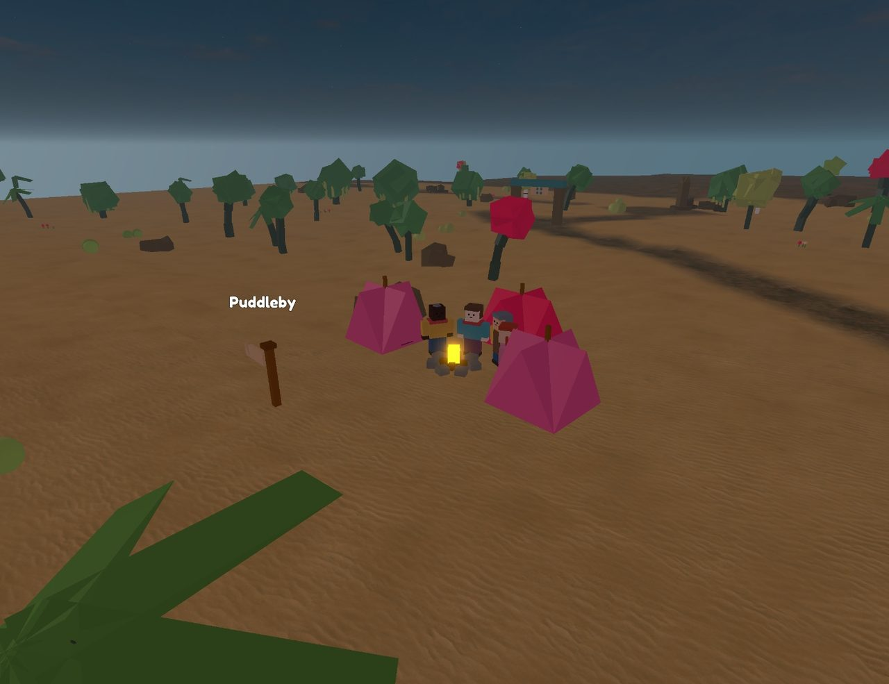
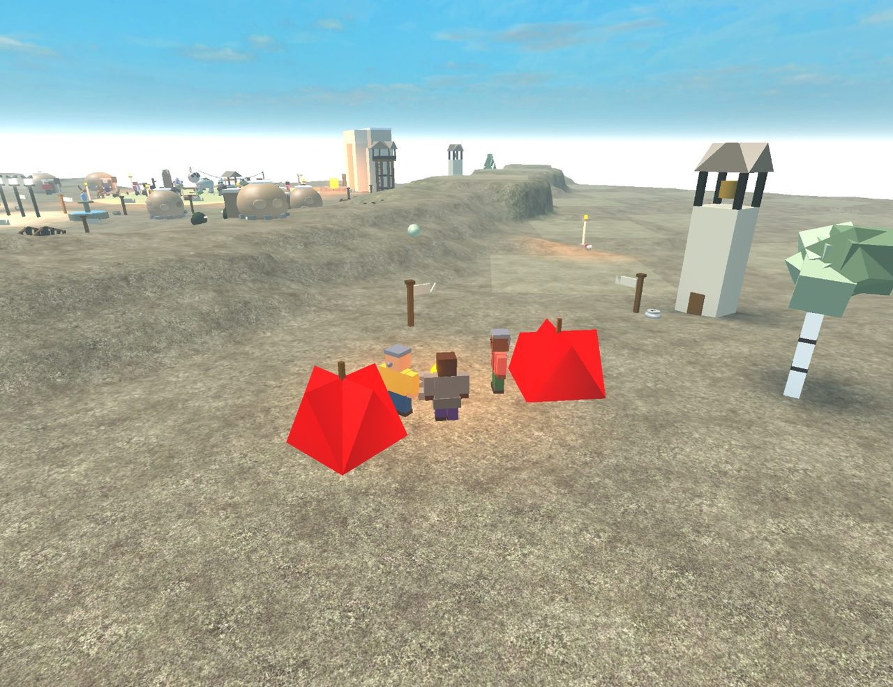
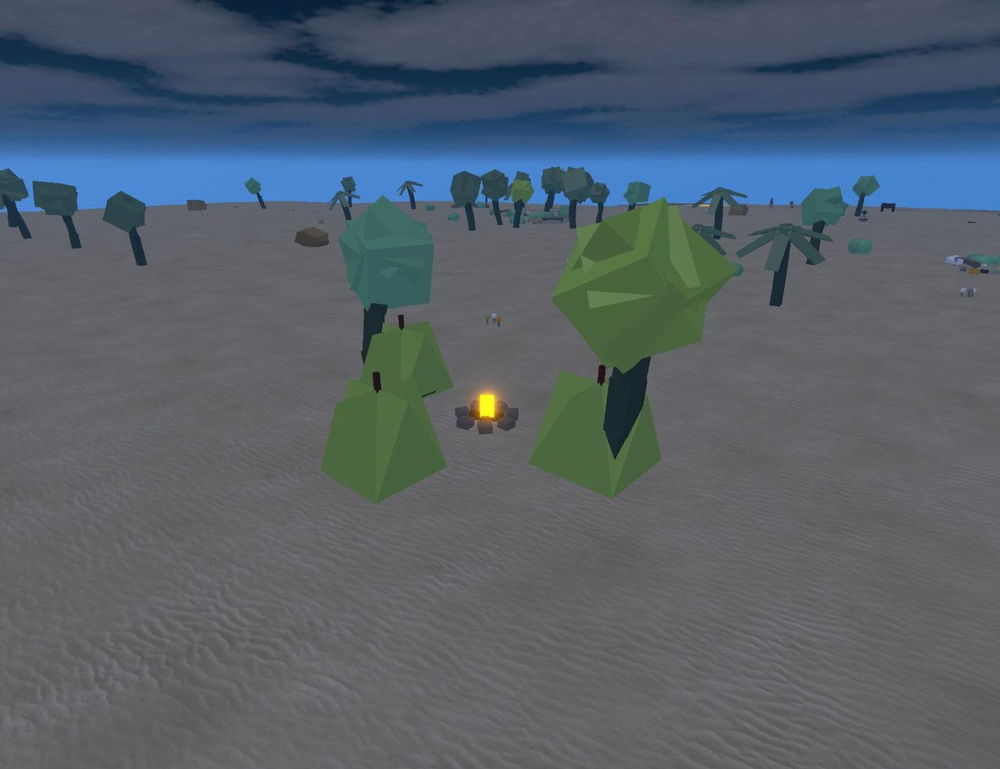
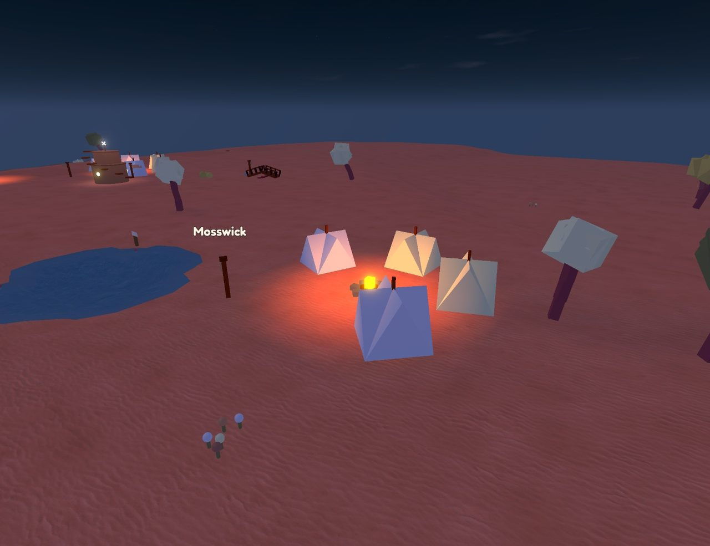
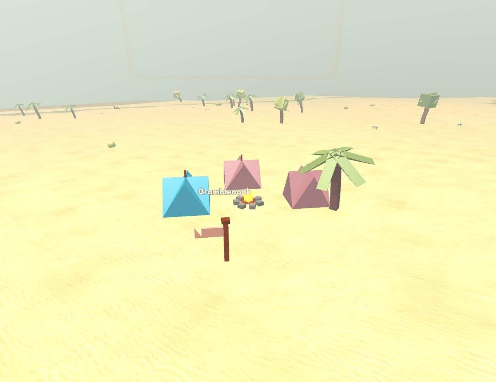
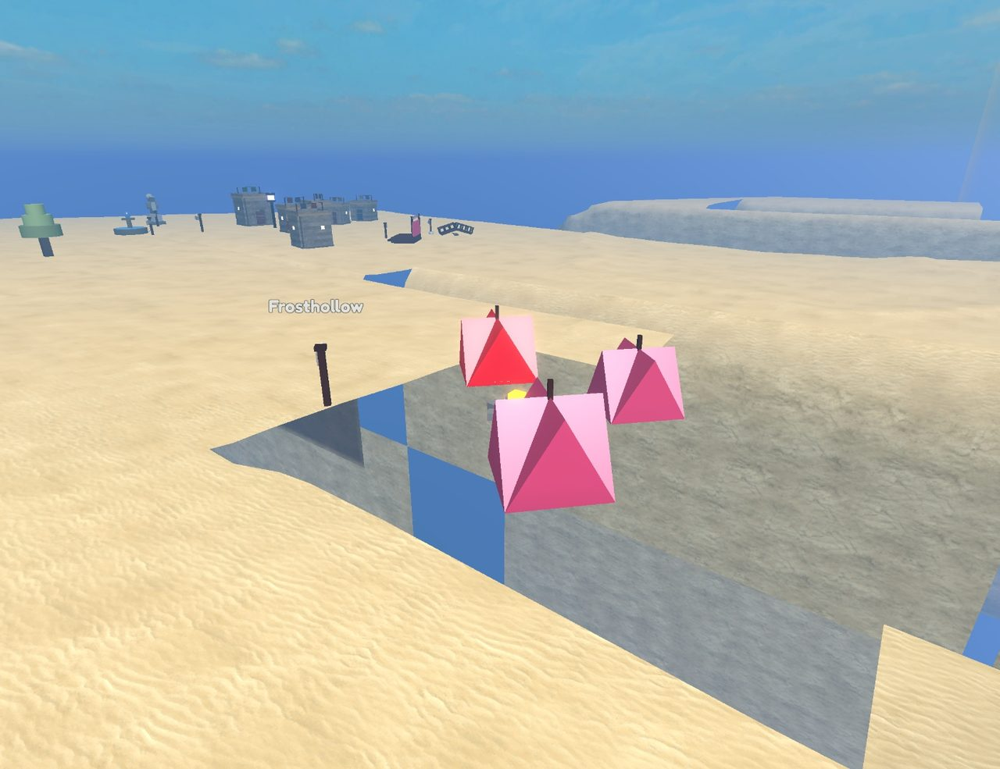
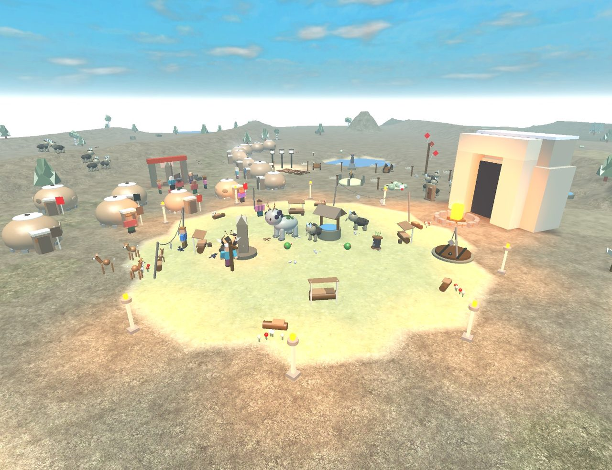
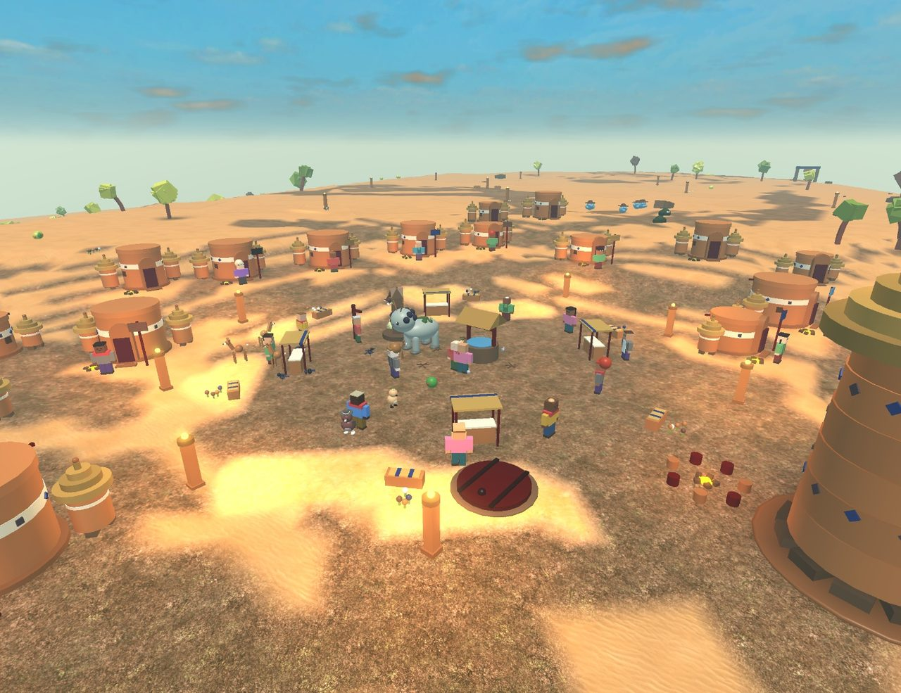

The Annals of Zibbitz
Year 0 of the Clock is 18 Oct 22:32 UTC; one world year is 3 real minutes; an era is 50 years; an age is one real day.
Written 22 Oct 10:53 UTC.
It is Year 1686 of the Clock. 1940 people live in 140 towns, villages and camps across 48 lands (18 found since the clock was lit, all of them past the edge of every map, where no visitor can walk yet). 76 customs have become binding. Every line below happened by itself.
On the brink
- Keeping makers' signs is nearest to becoming a custom in Weatherhold Downs: about 97% of the way.
- The stones between Woolmere and Foldpaper Fields have kept the peace 270 years; 120 honoured years make a custom.
- The stones between Windfelt Steppe and Highloom Plateau have kept the peace 619 years; 120 honoured years make a custom.
- The stones between Lark Aloft and Inkbough have kept the peace 214 years; 120 honoured years make a custom.
- The stones between Kelpdeep and Lanternwater have kept the peace 395 years; 120 honoured years make a custom.
- The stones between Saltcamp and Ringstone Hill have kept the peace 393 years; 120 honoured years make a custom.
- The stones between Acorngate and Skerryhold have kept the peace 426 years; 120 honoured years make a custom.
- The stones between Whistlereach and Bramblereach have kept the peace 471 years; 120 honoured years make a custom.
- The stones between Lanternstead and Bellwell have kept the peace 183 years; 120 honoured years make a custom.
- The stones between Bell Aloft and Frost Aloft Bend have kept the peace 388 years; 120 honoured years make a custom.
- The stones between Saltcamp and Glimmer Aloft have kept the peace 413 years; 120 honoured years make a custom.
- The stones between Reedsteps Green and Thistlewell have kept the peace 494 years; 120 honoured years make a custom.
- In Auroral Hush, only Feelia (70) still saw Era 31 with their own eyes.
- In Giantsgarden, only Zeero (55) still saw Era 32 with their own eyes.
- In Thimblefrost Isles, only Brypip (75) still saw Era 29 with their own eyes.
- In Rainstep Wells, only Treell (58) still saw Era 31 with their own eyes.
- In Ringstone Hill, only Snoulo (82) still saw Era 28 with their own eyes.
- In Sketchmoor, only Hurao (63) still saw Era 32 with their own eyes.
- In The Floodmark, only Fimel (75) still saw Era 28 with their own eyes.
- In Windfelt Steppe, only Hoott (73) still saw Era 29 with their own eyes.
- The oldest person alive is Paibo of Lostfound Shore, 83.
The eras in one line each
- Era 34 · ongoing: Years 1650–1686: The Tugwings are re-linked now, and came to live in Thistlewell. The first one walked in 95 years ago.
- Era 33: Years 1600–1649: In Mitten Aloft Rise, everyone now carves their own mark by the things they make, and keeps the old marks deep. They call it “signing it”.
- Era 32: Years 1550–1599: In Pebble Aloft, everyone now carves their own mark by the things they make, and keeps the old marks deep. They call it “the remembering stones”.
- Era 31: Years 1500–1549: Skerryhold split in two over two tellings of the faded painted pole in the square.
- Era 30: Years 1450–1499: The Humhorses are re-linked now, and came to live in Sparrowhollow. The first one walked in 171 years ago.
- Era 29: Years 1400–1449: Lanternstead split in two over two tellings of the empty houses of Mistby, and who built them.
- Era 28: Years 1350–1399: In Dune Aloft Bend, everyone now carves their own mark by the things they make, and keeps the old marks deep. They call it “the long remembering”.
- Era 27: Years 1300–1349: Between Pebble Aloft and Reed Aloft, a row of stones has kept the peace for 215 years. Nobody argues with the stones now: they call it “listening to the stones”.
- Era 26: Years 1250–1299: Clover Aloft split in two over years of falling-outs.
- Era 25: Years 1200–1249: In the square in Lanternwater, everyone still sways after the cheer, though Liabo, who began it, is long gone. They call it “the square sway”.
- Era 24: Years 1150–1199: Between Glimmernook and Archwater, a row of stones has kept the peace for 188 years. Nobody argues with the stones now: they call it “the quiet stones”.
- Era 23: Years 1100–1149: Now, in the square in Lanternwater, everyone sways after the cheer.
- Era 22: Years 1050–1099: In Frost Aloft, everyone now carves their own sign by the things they make, and keeps the old signs deep. They call it “keeping the signs”.
- Era 21: Years 1000–1049: Diamo climbed down a long reed ladder and found Thimblebell Underroots underneath.
- Era XX: Years 950–999: Plouffin came to Thistlemere from Giantsgarden with 31 years of news; in Thistlemere, only 9 years had gone by.
- Era XIX: Years 900–949: Too many kinds were sharing Highloom Plateau's food, and the last Pilegoat there was not seen again.
- Era XVIII: Years 850–899: Lialo walked out past the last land and kept on walking, and came home to Archwater from the other side. The world is round.
- Era XVII: Years 800–849: In Whistlereach, everyone now carves their own sign by the things they make, and keeps the old signs deep. They call it “signing it”.
- Era XVI: Years 750–799: In Mangrove Maze, everyone now carves their own sign by the things they make, and keeps the old signs deep. They call it “signing it”.
- Era XV: Years 700–749: In Willowgate, everyone now carves their own sign by the things they make, and keeps the old signs deep. They call it “the stone-telling”.
- Era XIV: Years 650–699: The last Foldpony anywhere has not been seen again.
- Era XIII: Years 600–649: Bell Aloft is a town now.
- Era XII: Years 550–599: In Saltsteps, everyone now carves their own sign by the things they make, and keeps the old signs deep. They call it “the remembering stones”.
- Era XI: Years 500–549: In Giantsgarden, everyone now carves their own sign by the things they make, and keeps the old signs deep. They call it “signing it”.
- Era X: Years 450–499: The Rowcrabs are re-linked now, and came to live in Skerryhold. The first one walked in 55 years ago.
- Era IX: Years 400–449: Hummingstone Vale split in two over two tellings of The Open Mouth Stone, and who made it.
- Era VIII: Years 350–399: Nobody in Lanternwater or Glowpool Green remembers anymore why a row of stones crosses the Glimmercap slopes, so they've started arguing again.
- Era VII: Years 300–349: Sourain rose on a reed kite and found Velvetmoss Drifts in the clouds.
- Era VI: Years 250–299: The last few of Glimmersteps packed up and went to live in Greenglass Spires. Glimmersteps stands empty.
- Era V: Years 200–249: The last of Quillfold moved away. Quillfold stands empty.
- Era IV: Years 150–199: Nobody in Steamstep Springs remembers the years 0 to 49 anymore. Those stories were never passed on.
- Era III: Years 100–149: Siver walked past the edge of every map and found Papermoss Shallows.
- Era II: Years 50–99: Giantsgarden sent baskets of Lanternfern to Hearthward in a hungry year.
- Era I: Years 0–49: Kelpdeep split in two over whose turn it was to ring the bell.
- Before the Clock: The world was shaped before it was given time: Hearthward first, then the lands around it, then its first visitors, and at last a clock of its own.
Age V · 22 October
Era 34 · Years 1650–1686 · ongoing
22 Oct 09:02 UTC – 22 Oct 10:53 UTC · 749 events · full log
Years 1650–1686: The Tugwings are re-linked now, and came to live in Thistlewell. The first one walked in 95 years ago.
- Year 1650: Tebo of Quill Aloft Hill worked out the deep stone well again, long after the world forgot it.
How it started, in year 1600: Nobody anywhere remembers how to make the deep stone well now. - Year 1650: Moss Aloft Rise held the first Miss-You Day.
How it started, in year 1650: Moss Aloft Rise has made up its mind: the Waterpika nobody has seen in years? It's something older than anyone's grandparents. - Year 1655: In front of the landmark in Lanternwater, nobody reaches up high after the pointing anymore.
How it started, in year 1628: Now, in front of the landmark in Lanternwater, everyone reaches up high after the pointing. - Year 1656: Toosy led 4 others out of Mittenfold and founded Thistlestead.
- Year 1661: Now everyone knows what Ploudy made from Zoffinie tuft and Fernthistle: the Trooty rope. The Zoffinie tuft's feathery touch went into it, and now it sweeps dust into tidy little piles. It also tickles whoever touches it and calms creatures down.
How it started, in year 1639: Ploudy of Thistlemere mixed Zoffinie tuft and Fernthistle together to see what they would make. Nobody knows what it does yet. - Year 1663: The Twirldoves of Velvetbell Drifts have changed so much that they have a new name: Long Twirldoves.
How it started, in year 1652: Twirldoves left Mist Aloft: they can't stand the Snyx brick. - Year 1664: Reedford Green split in two over years of falling-outs.
How it started, in year 1645: Snaix led 5 others out of Steamstep Springs and founded Reedford Green. - Year 1667: In front of the landmark in Sketchmoor, everyone still reaches up high after the pointing, though Turo, who began it, is long gone. They call it “the landmark hands-up”.
How it started, in year 1667: Now, in front of the landmark in Sketchmoor, everyone reaches up high after the pointing. - Year 1670: Crumbknoll Green has made up its mind: the empty houses of Thistlehollow, and who built them? It's the doing of folk from Teastep Terraces, before anyone here was born.
How it started, in year 1651: People in Crumbknoll Green began to wonder about the empty houses of Thistlehollow, and who built them.
What they didn't know: Thistlehollow was there before the clock began; its last folk left in Year 779. - Year 1672: Snaix of Puddleford came to the end of a long, full life with a warm cup in hand, at 82.
- Year 1673: The Tugwings are re-linked now, and came to live in Thistlewell. The first one walked in 95 years ago.
How it started, in year 1578: One of the Tugwings walked into Thistlewell and stayed by the fire. - Year 1680: Auroral Hush let Pebbleford Bend have the Glimmercap slopes, and went further out for their own.
How it started, in year 1674: Pebbleford Bend and Auroral Hush both say the Glimmercap slopes between them are theirs. - Year 1684: Iaty finished the lucky story house in Frost Aloft.
How it started, in year 1496: Moux of Windcatcher Oasis invented the Willowreed song. - Year 1686: Moudy finished the statue of Zosyin in Woolmere, with Joomin.
How it started, in year 1612: Plomble of Auroral Hush worked out the clay letters again, long after the world forgot it.
Era 33 · Years 1600–1649
22 Oct 06:32 UTC – 22 Oct 09:02 UTC · 1066 events · full log
Years 1600–1649: In Mitten Aloft Rise, everyone now carves their own mark by the things they make, and keeps the old marks deep. They call it “signing it”.
- Year 1603: Baipip led 4 others out of Whistleby and founded Plumby.
How it started, in year 1603: Whistleby let Glowpool Green have the Glimmercap slopes, and went further out for their own. - Year 1604: Clover Aloft Bend is a town now.
How it started, in year 1603: Flundleo finished Flundleo's house in Clover Aloft Bend. - Year 1607: Fill finished the statue of Foox in Dunesteps, with Vaittin.
How it started, in year 1531: Foover of Giantsgarden worked out the paper letters again, long after the world forgot it. - Year 1610: Wundle of Lanternwater worked out the wool rope bridge again, long after the world forgot it.
How it started, in year 1267: Nobody anywhere remembers how to make the wool rope bridge now. - Year 1610: Bramblegate held the first Story House Day.
How it started, in year 1610: Nooboin finished the story house in Bramblegate, with Moolo, Troor and Buwen. - Year 1613: In Mitten Aloft Rise, everyone now carves their own mark by the things they make, and keeps the old marks deep. They call it “signing it”.
How it started, in year 1613: Ziaver carved Fety's mark by the story house deeper. They never met; the stone remembers. - Year 1620: Lantern Aloft split in two over two tellings of why, here, every sound made here comes back a day later.
How it started, in year 1589: Lantern Aloft no longer agrees about why, here, every sound made here comes back a day later.
What they didn't know: It was so before the clock began. - Year 1621: The Soaklizards of Velvetmoss Drifts have changed so much that they have a new name: Night Soaklizards.
How it started, in year 1621: After 71 years in hiding, the Soaklizards of Velvetmoss Drifts came out again. - Year 1626: Dail of Salt Aloft Green came to the end of a long life one snowy evening, warm and full, at 70.
- Year 1631: The Dashpuppies are re-linked now, and came to live in Dunemere. The first one walked in 52 years ago.
How it started, in year 1579: One of the Dashpuppies walked into Dunemere and stayed by the fire. - Year 1636: UnderKettle paid Reedmere back for the baskets of the hungry years.
How it started, in year 1595: Reedmere sent baskets of Glimmercap to UnderKettle in a hungry year. - Year 1639: Leeso finished the statue of Mutyel in Glimmercamp.
How it started, in year 1425: Hus of Glowpool Green invented the Whistlethistle song. - Year 1641: Pebble Aloft Rise has made up its mind: the empty houses of Drift Aloft, and who built them? It's a dream that walked out of someone's head.
How it started, in year 1622: People in Pebble Aloft Rise began to wonder about the empty houses of Drift Aloft, and who built them.
What they didn't know: Drift Aloft was there before the clock began; its last folk left in Year 1543. - Year 1644: In front of the landmark in Steamstep Springs, everyone still claps after the pointing, though Toul, who began it, is long gone. They call it “the landmark clap”.
How it started, in year 1644: Now, in front of the landmark in Steamstep Springs, everyone claps after the pointing. - Year 1646: In Sketchmoor, everyone now carves their own mark by the things they make, and keeps the old marks deep. They call it “telling the stones”.
How it started, in year 1616: Osy rubbed the moss off a stone by the old lookout tower in Sketchmoor and knew the worn mark: Feedy built it.
Era 32 · Years 1550–1599
22 Oct 04:02 UTC – 22 Oct 06:32 UTC · 1123 events · full log
Years 1550–1599: In Pebble Aloft, everyone now carves their own mark by the things they make, and keeps the old marks deep. They call it “the remembering stones”.
- Year 1552: In front of the landmark in Baobab Reach, everyone still claps after the pointing, though Riana, who began it, is long gone. They call it “the landmark clap”.
How it started, in year 1526: Now, in front of the landmark in Baobab Reach, everyone claps after the pointing. - Year 1553: Lyxin of UnderCloud worked out the deep clay well again, long after the world forgot it.
How it started, in year 1475: Nobody anywhere remembers how to make the deep clay well now. - Year 1554: Now Hushsteps knows who built the old bridge: Bialo. They still tell the story about something the Lookoutelephants of Inkbough did, for fun.
How it started, in year 1554: Jamble rubbed the moss off a stone by the old bridge in Hushsteps and knew the worn mark: Bialo built it. - Year 1560: Between Lostfound Shore and Dune Aloft, a row of stones has kept the peace for 279 years. Nobody argues with the stones now: they call it “listening to the stones”.
How it started, in year 1560: The Glimmercap slopes grew crowded again, and Lostfound Shore and Dune Aloft pointed at the old row of stones instead of arguing. - Year 1560: Sketchmoor has made up its mind: the faded painted pole in the square? It's Noty's doing, long ago.
How it started, in year 1506: People in Sketchmoor began to wonder about the faded painted pole in the square.
What they didn't know: It was raised for Painted Poles Day, which was kept here from Year 1258 to Year 1411. - Year 1565: Affin led 2 others out of Whistleby and founded Saltcamp Rise.
How it started, in year 1088: Giver finished Giver's house in Whistleby, with Foobble. - Year 1571: Maittel finished the bell tower in Crumbknoll Green, with Zex and Sniall.
How it started, in year 1473: Breell of Quillsteps Hill worked out the reed scarecrow again, long after the world forgot it. - Year 1576: Sketchmoor split in two over two tellings of The Half-Drawn Windmill, and who made it.
How it started, in year 1569: Sketchmoor no longer agrees about The Half-Drawn Windmill, and who made it.
What they didn't know: It was there before the clock began. - Year 1578: In Pebble Aloft, everyone now carves their own mark by the things they make, and keeps the old marks deep. They call it “the remembering stones”.
How it started, in year 1578: Rees carved Veelo's mark by Veelo's house deeper. They never met; the stone remembers. - Year 1580: Plum Aloft Rise split in two over years of falling-outs.
How it started, in year 1579: Folks in Plum Aloft Rise say Roubble is a bit prickly. - Year 1581: Driftford split in two over two tellings of the empty houses of Glimmerreach, and who built them.
How it started, in year 1578: Driftford no longer agrees about the empty houses of Glimmerreach, and who built them.
What they didn't know: Glimmerreach was there before the clock began; its last folk left in Year 1145.
- Year 1589: Sneeffin rose on a Brellel thread and found Amberroot Heights in the clouds.
- Year 1589: In Amberroot Heights, stones here grow a little every year.
How it started, in year 1589: Sneeffin rose on a Brellel thread and found Amberroot Heights in the clouds. - Year 1593: Jeelo climbed down a deep clay well and found Hollowthread Hollows underneath.
How it started, in year 1553: Lyxin of UnderCloud worked out the deep clay well again, long after the world forgot it. - Year 1594: Houffin finished the statue of Oudy in Saltknoll.
Era 31 · Years 1500–1549
22 Oct 01:32 UTC – 22 Oct 04:02 UTC · 1027 events · full log
Years 1500–1549: Skerryhold split in two over two tellings of the faded painted pole in the square.
- Year 1501: Skerryhold split in two over two tellings of the faded painted pole in the square.
How it started, in year 1477: Skerryhold no longer agrees about the faded painted pole in the square.
What they didn't know: It was raised for Old Stones Day, which was kept here from Year 990 to Year 1047. - Year 1501: Plys led 6 others out of Skerryhold and founded Plumwick.
How it started, in year 1501: Skerryhold split in two over two tellings of the faded painted pole in the square. - Year 1504: Mall of Frostby finished a long life by the water, counting sails, at 73.
- Year 1511: Trimble of Tusklands worked out the glass bell again, long after the world forgot it.
How it started, in year 1479: Nobody anywhere remembers how to make the glass bell now. - Year 1512: The last of Wool Aloft Hill moved away. Wool Aloft Hill stands empty.
- Year 1513: Woott dreamed of being remembered, and did it.
- Year 1521: Plumwick has made up its mind: The Twice-Measured Boat, and who made it? It's Mudy's doing, long ago.
How it started, in year 1514: People in Plumwick began to wonder about The Twice-Measured Boat, and who made it.
What they didn't know: It was there before the clock began. - Year 1525: At the festival in Greenglass Spires, everyone still bows after the hopping, though Wrillel, who began it, is long gone. They call it “the festival bow”.
How it started, in year 1478: Now, at the festival in Greenglass Spires, everyone bows after the hopping. - Year 1528: The Hill Flapscraps round Glimmer Aloft have gone into hiding: the glass bell was too much for them.
How it started, in year 969: Seer of Froststead worked out the glass bell again, long after the world forgot it. - Year 1532: Joundle finished the story house in Mistford, with Lall and Foosy.
How it started, in year 1531: Joundle had a hunch and began a story house in Mistford, though nobody there had asked for one. - Year 1535: Rias finished the star-watching hill in Frost Aloft Bend.
- Year 1537: Now, in the square in Rainstep Wells, everyone bows after the cheer.
How it started, in year 1531: Maver began to bow after the cheer in the square in Rainstep Wells, to remember something that fell down. - Year 1540: Mitten Aloft Rise held the first Story House Day.
How it started, in year 1540: Fety finished the story house in Mitten Aloft Rise, with Miver and Pliar. - Year 1549: The Night Packechos of Velvetbell Drifts have changed so much that they have a new name: Shore Night Packechos.
How it started, in year 1327: Night Packechos came to Velvetbell Drifts from Rainstep Wells.
Age IV · 21 October
Era 30 · Years 1450–1499
21 Oct 23:02 UTC – 22 Oct 01:32 UTC · 1039 events · full log
Years 1450–1499: The Humhorses are re-linked now, and came to live in Sparrowhollow. The first one walked in 171 years ago.
- Year 1450: Now Mangrove Maze knows who built the old story house: Jymble. They still tell the story about Jymble's doing, long ago, for fun.
How it started, in year 1450: Eer rubbed the moss off a stone by the old story house in Mangrove Maze and knew the worn mark: Jymble built it. - Year 1450: Kettlereach has made up its mind: the faded painted pole in the square? It's a festival nobody keeps any more.
How it started, in year 1450: People in Kettlereach began to wonder about the faded painted pole in the square.
They were right: It was raised for Old Houses Day, which was kept here from Year 976 to Year 1373. - Year 1457: Redspire Mesa split in two over years of falling-outs.
How it started, in year 1439: Folks in Redspire Mesa say Ara is a bit prickly. - Year 1461: Tewenin led 5 others out of Lantern Aloft Green and founded Honey Aloft Bend.
How it started, in year 1460: Traity left Whistleby for Lantern Aloft. - Year 1463: Bryffin finished the story house in Reedsteps Green, with Taiwen, Fewen and Voomin.
How it started, in year 974: Zeebble of Glimmer Aloft invented the Tunechime song. - Year 1467: At the gate in Windfelt Steppe, everyone still bows after the wave, though Toull, who began it, is long gone. They call it “the gate bow”.
How it started, in year 1447: Now, at the gate in Windfelt Steppe, everyone bows after the wave. - Year 1470: Crumbford held the first Bell Tower Day.
How it started, in year 1470: Mullie finished the bell tower in Crumbford, with Wralo and Gaver. - Year 1471: Nett of Plumcamp Rise worked out the water map again, long after the world forgot it.
How it started, in year 1464: Nobody anywhere remembers how to make the water map now. - Year 1474: The Humhorses are re-linked now, and came to live in Sparrowhollow. The first one walked in 171 years ago.
How it started, in year 1303: One of the Humhorses walked into Sparrowhollow and stayed by the fire. - Year 1480: Topipie moved into empty Frost Aloft Bend and lit the first fire in years.
How it started, in year 1480: Glimmer Aloft split in two over two tellings of why, here, here, what is planted grows twice as fast and is gone twice as soon. - Year 1482: Wiaverin of Tusklands came to the end of a long life one snowy evening, warm and full, at 73.
- Year 1483: The Tapdusts of Velvetbell Drifts have changed so much that they have a new name: Stripe Tapdusts.
How it started, in year 1483: Tapdusts left Mist Aloft: they can't stand the Meepipin whistle. - Year 1490: Tusklands split in two over two tellings of the strange Stakespindle that came from Windfelt Steppe.
How it started, in year 1489: Tusklands no longer agrees about the strange Stakespindle that came from Windfelt Steppe. - Year 1491: Ara finished the kite tower in Crumbford.
How it started, in year 964: Breemel of Moonmoth Meadows worked out the steam balloon again, long after the world forgot it. - Year 1494: Lanternreach split in two over whether to keep Far Guests Day.

Era 29 · Years 1400–1449
21 Oct 20:32 UTC – 21 Oct 23:02 UTC · 1025 events · full log
Years 1400–1449: Lanternstead split in two over two tellings of the empty houses of Mistby, and who built them.
- Year 1400: Lanternstead split in two over two tellings of the empty houses of Mistby, and who built them.
How it started, in year 1391: People in Lanternstead began to wonder about the empty houses of Mistby, and who built them.
What they didn't know: Mistby was there before the clock began; its last folk left in Year 1116. - Year 1400: Fluna led 7 others out of Lanternstead and founded Mistford.
How it started, in year 1400: Lanternstead split in two over two tellings of the empty houses of Mistby, and who built them. - Year 1402: Nobody in The Floodmark repeats the old talk about Wriamble anymore. Wriamble has helped so many neighbours since then.
How it started, in year 1377: Plax finished the blue bridge in The Floodmark, with Wriamble. - Year 1410: Will of Teastep Terraces worked out the string scarecrow again, long after the world forgot it.
How it started, in year 1395: Nobody anywhere remembers how to make the string scarecrow now. - Year 1414: In front of the landmark in Mangrove Maze, everyone still reaches up high after the pointing, though Saivero, who began it, is long gone. They call it “the landmark hands-up”.
How it started, in year 1359: Now, in front of the landmark in Mangrove Maze, everyone reaches up high after the pointing. - Year 1418: Yroin of Crumbford lived out a long life among the tall grass, at 74.
- Year 1420: Saltcamp has made up its mind: the Weavebasket nobody has seen in years? It's the doing of folk from Froststead, before anyone here was born.
How it started, in year 1362: People in Saltcamp began to wonder about the Weavebasket nobody has seen in years.
What they didn't know: The last one near Saltcamp was seen in Year 1329. - Year 1427: Now Fernnook knows who built the old lookout tower: Guverie. They still tell the story about the land itself, talking in its sleep, for fun.
How it started, in year 1427: Mea rubbed the moss off a stone by the old lookout tower in Fernnook and knew the worn mark: Guverie built it. - Year 1428: After 72 years in hiding, the Carrygoats of Rainstep Wells came out again.
How it started, in year 1356: The Carrygoats round Rainstep Wells have gone into hiding: the string scarecrow was too much for them. - Year 1430: Miasy put Cloudthistle and Puddlethistle together and got something new: the Troupip tuft. It kept the Puddlethistle's wetness, so it rolls toward water when the ground is dry. It also keeps a drink cool on a hot day.
How it started, in year 1429: Miasy of Hearthward mixed Cloudthistle and Puddlethistle together to see what they would make. Nobody knows what it does yet. - Year 1432: The Sailsnails of Thimblefrost Isles have changed so much that they have a new name: Hill Sailsnails.
How it started, in year 1150: Sailsnails came to Thimblefrost Isles from The Floodmark. - Year 1436: Vuna finished the long star-watching hill in Teastep Terraces, with Beeboel.
- Year 1441: Giantsgarden held the first Old Houses Day.
How it started, in year 1441: Giantsgarden has made up its mind: the empty houses of Saltgate, and who built them? It's the stars, practising. - Year 1448: Voulla finished the bell tower in Lark Aloft.
How it started, in year 969: Seer of Froststead worked out the glass bell again, long after the world forgot it.
Era 28 · Years 1350–1399
21 Oct 18:02 UTC – 21 Oct 20:32 UTC · 960 events · full log
Years 1350–1399: In Dune Aloft Bend, everyone now carves their own mark by the things they make, and keeps the old marks deep. They call it “the long remembering”.
- Year 1352: Now Mosssteps knows who built the old workshop: Laipipa. They still tell the story about the old ones, long asleep, for fun.
How it started, in year 1352: Gydyin rubbed the moss off a stone by the old workshop in Mosssteps and knew the worn mark: Laipipa built it. - Year 1356: Between Redspire Mesa and Archwater, a row of stones has kept the peace for 135 years. Nobody argues with the stones now: they call it “the stone line”.
How it started, in year 1338: The Mistberry slopes grew crowded again, and Redspire Mesa and Archwater pointed at the old row of stones instead of arguing. - Year 1358: Miamo finished the new story house in Greenglass Spires.
How it started, in year 1248: Meety of Dune Aloft Rise worked out the Emberclover song again, long after the world forgot it. - Year 1360: Yro of Lantern Aloft Green worked out the string rope bridge again, long after the world forgot it.
How it started, in year 1312: Nobody anywhere remembers how to make the string rope bridge now. - Year 1361: Archwater split in two over two tellings of the strange Night Pacejay that came from Baobab Reach.
How it started, in year 1346: Archwater no longer agrees about the strange Night Pacejay that came from Baobab Reach. - Year 1366: In front of the landmark in Moonmoth Meadows, everyone still sways after the pointing, though Tudyin, who began it, is long gone. They call it “the landmark sway”.
How it started, in year 1306: Now, in front of the landmark in Moonmoth Meadows, everyone sways after the pointing. - Year 1367: Acorngate split in two over too many hearths and too little room.
How it started, in year 1366: Poro left Sketchmoor for Willowfold.
- Year 1370: Lantern Aloft has made up its mind: the Wavesparrow nobody has seen in years? It's the doing of folk from Embercamp, before anyone here was born.
How it started, in year 1363: People in Lantern Aloft began to wonder about the Wavesparrow nobody has seen in years.
What they didn't know: The last one near Lantern Aloft was seen in Year 1344. - Year 1376: Nuvero moved into empty Kettlereach and lit the first fire in years.
How it started, in year 1376: Rosecut Canyon split in two over whether to keep Old Houses Day. - Year 1376: Rosecut Canyon split in two over whether to keep Old Houses Day.
How it started, in year 1266: Rosecut Canyon held the first Old Houses Day. - Year 1382: Vatta rose on a paper balloon and found Velvethum Heights in the clouds.
How it started, in year 1303: Lor of Bramblereach worked out the paper balloon again, long after the world forgot it. - Year 1382: In Velvethum Heights, here it is always the hour before rain.
How it started, in year 1382: Vatta rose on a paper balloon and found Velvethum Heights in the clouds. - Year 1384: In Dune Aloft Bend, everyone now carves their own mark by the things they make, and keeps the old marks deep. They call it “the long remembering”.
How it started, in year 1352: Flun carved Feelo's mark by the story house deeper. They never met; the stone remembers. - Year 1394: Snaro led 5 others out of Lark Aloft and founded Sparrow Aloft Green.
How it started, in year 1394: Lark Aloft split in two over too many hearths and too little room. - Year 1399: The last of Hush Aloft moved away. Hush Aloft stands empty.
Era 27 · Years 1300–1349
21 Oct 15:32 UTC – 21 Oct 18:02 UTC · 967 events · full log
Years 1300–1349: Between Pebble Aloft and Reed Aloft, a row of stones has kept the peace for 215 years. Nobody argues with the stones now: they call it “listening to the stones”.
- Year 1305: Nowen finished the west star-watching hill in Quill Aloft, with Flasyel.
- Year 1306: The last of Wool Aloft moved away. Wool Aloft stands empty.
How it started, in year 1306: Hiady led 9 others out of Wool Aloft and founded Willow Aloft. - Year 1307: Woolo moved into empty Wool Aloft and lit the first fire in years.
How it started, in year 1306: The last of Wool Aloft moved away. Wool Aloft stands empty. - Year 1310: Teacup Aloft held the first Painted Poles Day.
How it started, in year 1310: Teacup Aloft has made up its mind: the faded painted pole in the square? It's a festival nobody keeps any more. - Year 1315: In the square in Ringstone Hill, everyone still bows after the cheer, though Plaidy, who began it, is long gone. They call it “the square bow”.
How it started, in year 1292: Now, in the square in Ringstone Hill, everyone bows after the cheer. - Year 1319: Wool Aloft split in two over years of falling-outs.
How it started, in year 1317: Folks in Wool Aloft say Noo is a bit prickly. - Year 1320: Nyro led 5 others out of Woolcamp Green and founded Mosswick.
How it started, in year 1319: Vir left Pebble Aloft Rise for Redspire Mesa.
- Year 1323: The Loadshimmers of Thimblebell Underroots have changed so much that they have a new name: Sleepy Loadshimmers.
How it started, in year 1217: Loadshimmers came to Thimblebell Underroots from Redspire Mesa. - Year 1324: Jooty finished the star-watching hill in Woolmere.
How it started, in year 1303: The last few of Frosthollow packed up and went to live in Woolmere. Frosthollow stands empty. - Year 1330: Flaivera of Drift Aloft worked out the moss tea again, long after the world forgot it.
How it started, in year 1076: Nobody anywhere remembers how to make the moss tea now. - Year 1332: UnderQuill split in two over two tellings of the Castsnail nobody has seen in years.
How it started, in year 1326: UnderQuill no longer agrees about the Castsnail nobody has seen in years.
What they didn't know: The last one near UnderQuill was seen in Year 1062. - Year 1333: Lesel of Woolmere finished a long life under the oldest tree, at 70.
- Year 1342: Reedmere has made up its mind: The Granary of Tales, and who made it? It's something the Siftboots of Inkbough did.
How it started, in year 1342: People in Reedmere began to wonder about The Granary of Tales, and who made it.
What they didn't know: It was there before the clock began. - Year 1347: Between Pebble Aloft and Reed Aloft, a row of stones has kept the peace for 215 years. Nobody argues with the stones now: they call it “listening to the stones”.
How it started, in year 1346: The Pebblegrass slopes grew crowded again, and Pebble Aloft and Reed Aloft pointed at the old row of stones instead of arguing.
Era 26 · Years 1250–1299
21 Oct 13:02 UTC – 21 Oct 15:32 UTC · 959 events · full log
Years 1250–1299: Clover Aloft split in two over years of falling-outs.
- Year 1251: The Dipsalts of Echofrost Heights have changed so much that they have a new name: Long Dipsalts.
How it started, in year 937: Dipsalts came to Echofrost Heights from Highloom Plateau. - Year 1252: Hara finished the bell tower in Bramblegate, with Sniffin, Browen and Pleelie.
How it started, in year 1156: Mull of Fernnook worked out the clay bell again, long after the world forgot it. - Year 1255: In the square in Highloom Plateau, everyone still bows after the cheer, though Hous, who began it, is long gone. They call it “the square bow”.
How it started, in year 1215: Now, in the square in Highloom Plateau, everyone bows after the cheer. - Year 1260: Lantern Aloft held the first Little Stage Day.
How it started, in year 1260: Laimin finished the little stage in Lantern Aloft, with Lyndle. - Year 1262: Bylo led 5 others out of Clover Aloft and founded Pebble Aloft Rise.
How it started, in year 1262: Clover Aloft split in two over years of falling-outs. - Year 1264: Redspire Mesa split in two over two tellings of the strange Little Dragsled that came from Thimblebell Underroots.
How it started, in year 1242: People in Redspire Mesa began to wonder about the strange Little Dragsled that came from Thimblebell Underroots. - Year 1270: Bidy of Plum Aloft Rise lived out a long life among the tall grass, at 68.
- Year 1273: Bellwell split in two over years of falling-outs.
How it started, in year 1252: Folks in Bellwell say Mai can mend anything.
- Year 1274: Tyna finished the statue of Miatyin in Saltcamp.
How it started, in year 1271: Tyna had a hunch and began a statue in Saltcamp, though nobody there had asked for one. - Year 1281: Now Fernnook knows who made the old bench: Wroor. They still tell the story about something older than anyone's grandparents, for fun.
How it started, in year 1281: Moura rubbed the moss off a stone by the old bench in Fernnook and made out a worn sign: Wroor made it. - Year 1281: Gera of Teacupknoll worked out the kelp boat again, long after the world forgot it.
How it started, in year 1258: Nobody anywhere remembers how to make the kelp boat now. - Year 1281: Nobody in Rainstep Wells repeats the old talk about Tedy anymore. Tedy has helped so many neighbours since then.
How it started, in year 1272: The old talk about Tedy followed Tedy all the way from Reed Aloft Green to Rainstep Wells. - Year 1292: Fernnook has made up its mind: the old dock nobody remembers making? It's Pana's doing, long ago.
How it started, in year 1292: People in Fernnook began to wonder about the old dock nobody remembers making.
What they didn't know: It was built by Tupip in Year 876. - Year 1294: Saltcamp split in two over whether to keep Little Stage Day.
How it started, in year 1132: Saltcamp held the first Little Stage Day.
- Year 1297: The last of Dunenook moved away. Dunenook stands empty.
How it started, in year 1296: Naibble left Dunenook for Embercamp.
Era 25 · Years 1200–1249
21 Oct 10:32 UTC – 21 Oct 13:02 UTC · 873 events · full log
Years 1200–1249: In the square in Lanternwater, everyone still sways after the cheer, though Liabo, who began it, is long gone. They call it “the square sway”.
- Year 1201: Reedmere held the first Far Guests Day.
How it started, in year 1201: Reedmere has made up its mind: the strange Hookloach that came from Lanternwater? It's the doing of folk from Baobab Reach, before anyone here was born. - Year 1205: In the square in Lanternwater, everyone still sways after the cheer, though Liabo, who began it, is long gone. They call it “the square sway”.
How it started, in year 1146: Now, in the square in Lanternwater, everyone sways after the cheer. - Year 1207: Flouty led 4 others out of Honeystead and founded Embernook.
How it started, in year 1207: Honeystead let Ringstone Hill have the Glimmercap slopes, and went further out for their own. - Year 1210: Guver of Rosecut Canyon worked out the honey spectacles again, long after the world forgot it.
How it started, in year 1183: Nobody anywhere remembers how to make the honey spectacles now. - Year 1211: In Bramble Aloft, everyone now carves their own sign by the things they make, and keeps the old signs deep. They call it “the long remembering”.
How it started, in year 1210: Moox carved Haimble's sign by the row of lampposts deeper. They never met; the stone remembers. - Year 1214: Flouty of Embernook came to the end of a long life one winter evening, warm and full, at 64.
- Year 1220: Willowknoll has made up its mind: why, here, things dropped here float up slowly by night? It's something the Little Night Packechos of Papermoss Shallows did.
How it started, in year 1211: People in Willowknoll began to wonder about why, here, things dropped here float up slowly by night.
What they didn't know: It was so before the clock began. - Year 1221: The last Shearcricket anywhere has not been seen again.
How it started, in year 1179: Fitstones came to Windfelt Steppe from Highloom Plateau. - Year 1221: Redspire Mesa and Archwater set a row of stones across the Mistberry slopes: this side for one, that side for the other.
How it started, in year 1204: Redspire Mesa and Archwater both say the Mistberry slopes between them are theirs. - Year 1221: In Tusklands, everyone now carves their own sign by the things they make, and keeps the old signs deep. They call it “telling the stones”.
How it started, in year 1213: Fyxo rubbed the moss off a stone by the old workshop in Tusklands and made out a worn sign: Treesyo built it.
- Year 1232: Too many kinds were sharing Rainstep Wells's food, and the last Carrygoat there was not seen again.
How it started, in year 1225: After 69 years in hiding, the Little Peerfrogs of Rainstep Wells came out again. - Year 1233: The Waitrams of Hushsalt Heights have changed so much that they have a new name: Stripe Waitrams.
How it started, in year 1064: Waitrams came to Hushsalt Heights from Greenglass Spires. - Year 1235: Ous finished the star-watching hill in Cloudwell.
How it started, in year 1228: Folks in Cloudwell say Ous has lots of ideas but rarely finishes them. - Year 1244: Bramble Aloft Rise split in two over too many hearths and too little room.
How it started, in year 1241: Sootta left Archwater for Reed Aloft Green. - Year 1245: Eett finished the kite tower in Teacup Aloft, with Uffin and Gyra.
How it started, in year 896: Gou of Hummingstone Vale worked out the string kite again, long after the world forgot it.
Era 24 · Years 1150–1199
21 Oct 08:02 UTC – 21 Oct 10:32 UTC · 918 events · full log
Years 1150–1199: Between Glimmernook and Archwater, a row of stones has kept the peace for 188 years. Nobody argues with the stones now: they call it “the quiet stones”.
- Year 1150: Mymin of Skerryhold worked out the kelp balloon again, long after the world forgot it.
How it started, in year 1004: Nobody anywhere remembers how to make the kelp balloon now. - Year 1151: The Cartbuckets of Echobell Heights have changed so much that they have a new name: Sleepy Cartbuckets.
How it started, in year 918: Cartbuckets came to Echobell Heights from Papermoss Shallows. - Year 1158: Among the houses in Lanternwater, nobody sways after the hopping anymore.
How it started, in year 1152: Now, among the houses in Lanternwater, everyone sways after the hopping. - Year 1160: Glimmernook has made up its mind: The First Seed, and who made it? It's something older than anyone's grandparents.
How it started, in year 1130: People in Glimmernook began to wonder about The First Seed, and who made it.
They were right: It was there before the clock began. - Year 1167: Between Glimmernook and Archwater, a row of stones has kept the peace for 188 years. Nobody argues with the stones now: they call it “the quiet stones”.
How it started, in year 1167: The Glimmercap slopes grew crowded again, and Glimmernook and Archwater pointed at the old row of stones instead of arguing. - Year 1168: Ody led 3 others out of Froststead and founded Quillsteps.
How it started, in year 1168: Froststead split in two over two tellings of The Open Mouth Stone, and who made it. - Year 1171: Teemin finished the story house in Willowfold, with Punaa and Loull.
- Year 1173: Teastep Terraces split in two over two tellings of the strange Chimedonkey that came from Rosecut Canyon.
How it started, in year 1170: Teastep Terraces no longer agrees about the strange Chimedonkey that came from Rosecut Canyon. - Year 1176: Moonmoth Meadows split in two over whether to keep Floor Hum Day.
How it started, in year 624: Moonmoth Meadows held the first Floor Hum Day. - Year 1180: Acorngate held the first Miss-You Day.
How it started, in year 1180: Acorngate has made up its mind: the Countotter nobody has seen in years? It's a very old tree remembering. - Year 1183: Ooffin rose on a felt balloon and found Hushshell Isles in the clouds.
How it started, in year 1045: Gol of Reed Aloft Green worked out the felt balloon again, long after the world forgot it. - Year 1183: In Hushshell Isles, footprints here stay for a hundred years.
How it started, in year 1183: Ooffin rose on a felt balloon and found Hushshell Isles in the clouds. - Year 1190: In Highloom Plateau, everyone now carves their own sign by the things they make, and keeps the old signs deep. They call it “signing it”.
How it started, in year 1184: Vool rubbed the moss off a stone by the old story house in Highloom Plateau and made out a worn sign: Woudy built it. - Year 1191: Snex finished the kite tower in Cloudwell.
How it started, in year 1118: Yffin of Ringstone Hill worked out the Cartbucket kite again, long after the world forgot it.
Era 23 · Years 1100–1149
21 Oct 05:32 UTC – 21 Oct 08:02 UTC · 896 events · full log
Years 1100–1149: Now, in the square in Lanternwater, everyone sways after the cheer.
- Year 1100: The Soakdoves of Velvetmoss Drifts have changed so much that they have a new name: Shore Soakdoves.
How it started, in year 938: Soakdoves came to Velvetmoss Drifts from Baobab Reach. - Year 1102: Mitten Aloft Green has made up its mind: the Hangboar nobody has seen in years? It's the stars, practising.
How it started, in year 1097: People in Mitten Aloft Green began to wonder about the Hangboar nobody has seen in years.
What they didn't know: The last one near Mitten Aloft Green was seen in Year 1083. - Year 1108: Wromin moved into empty Bellwell and lit the first fire in years.
How it started, in year 1108: Glimmerford Bend split in two over two tellings of the Stackturtle nobody has seen in years. - Year 1113: Bramble Aloft split in two over two tellings of the old kite tower nobody remembers making.
How it started, in year 1107: Bramble Aloft no longer agrees about the old kite tower nobody remembers making.
What they didn't know: It was built by Failia in Year 774. - Year 1113: Tiaver led 7 others out of Bramble Aloft and founded Honey Aloft.
How it started, in year 1113: Bramble Aloft split in two over two tellings of the old kite tower nobody remembers making. - Year 1113: Zys finished the kite tower in Kettleknoll, with Jobblein and Plott.
How it started, in year 896: Gou of Hummingstone Vale worked out the string kite again, long after the world forgot it. - Year 1121: Teacup Aloft held the first Bell Tower Day.
How it started, in year 1121: Dyloin finished the bell tower in Teacup Aloft, with Veeffino, Treedy and Ouminie. - Year 1123: Woun finished the star-watching hill in Embercamp.
How it started, in year 1110: Woun left Glowpool Green for Embercamp. - Year 1125: Bell Aloft split in two over years of falling-outs.
How it started, in year 1076: Folks in Bell Aloft say Yra is a bit prickly. - Year 1135: Mindlein rose on a Bakeram kite and found Lanternhum Drifts in the clouds.
- Year 1135: Now Pebbleford Bend knows who built the old house: Plaim. They still tell the story about the land itself, talking in its sleep, for fun.
How it started, in year 1135: Deena rubbed the moss off a stone by the old house in Pebbleford Bend and made out a worn sign: Plaim built it. - Year 1135: In Lanternhum Drifts, every sound made here comes back a day later.
How it started, in year 1135: Mindlein rose on a Bakeram kite and found Lanternhum Drifts in the clouds. - Year 1140: Zoffin of UnderQuill worked out the Quillvine bread again, long after the world forgot it.
How it started, in year 760: Nobody anywhere remembers how to make the Quillvine bread now. - Year 1146: Now, in the square in Lanternwater, everyone sways after the cheer.
How it started, in year 1145: Liabo began to sway after the cheer in the square in Lanternwater, to remember something that fell down.
Era 22 · Years 1050–1099
21 Oct 03:02 UTC – 21 Oct 05:32 UTC · 903 events · full log
Years 1050–1099: In Frost Aloft, everyone now carves their own sign by the things they make, and keeps the old signs deep. They call it “keeping the signs”.
- Year 1052: Offin finished the bell tower in Bramble Aloft Rise.
How it started, in year 1038: Offin of Bramble Aloft Rise worked out the felt scarecrow again, long after the world forgot it. - Year 1053: Bouro led 5 others out of Wool Aloft and founded Dune Aloft Bend.
- Year 1057: Crumbknoll has made up its mind: the empty houses of Ferngate, and who built them? It's Nandle's doing, long ago.
How it started, in year 1057: People in Crumbknoll began to wonder about the empty houses of Ferngate, and who built them.
What they didn't know: Ferngate was there before the clock began; its last folk left in Year 986. - Year 1060: The Cartbuckets of Velvetmoss Drifts have changed so much that they have a new name: Cartbucket-the-Youngers.
How it started, in year 907: Cartbuckets came to Velvetmoss Drifts from Baobab Reach. - Year 1061: Eedy finished the bell tower in Thistlereach Bend, with Numin.
How it started, in year 1058: Eedy had a hunch and began a bell tower in Thistlereach Bend, though nobody there had asked for one. - Year 1063: Kettle Aloft split in two over years of falling-outs.
How it started, in year 1061: Folks in Kettle Aloft say Lyl is a bit prickly. - Year 1070: Raimie of Willowford worked out the honey spectacles again, long after the world forgot it.
How it started, in year 1021: Nobody anywhere remembers how to make the honey spectacles now. - Year 1070: Embercamp held the first Wonder Day.
How it started, in year 1070: Embercamp has made up its mind: The Bridge That Counts Lanterns, and who made it? It's a dream that walked out of someone's head. - Year 1071: In Frost Aloft, everyone now carves their own sign by the things they make, and keeps the old signs deep. They call it “keeping the signs”.
How it started, in year 1071: Fledy carved Snill's sign by Snill's house deeper. They never met; the stone remembers. - Year 1082: The last of Moss Aloft Rise moved away. Moss Aloft Rise stands empty.
- Year 1082: Snulia of Glimmerreach finished a long life under the oldest tree, at 69.
- Year 1084: Quill Aloft is a town now.
How it started, in year 1083: Snairao finished Snairao's house in Quill Aloft, with Lar. - Year 1090: Fluty moved into empty Pebbleford Bend and lit the first fire in years.
How it started, in year 508: Hiana finished Hiana's house in Beanmere, with Fyo. - Year 1096: Now Pebble Aloft knows who built the old kite tower: Woulia. They still tell the story about the doing of folk from Moss Aloft Rise, before anyone here was born, for fun.
How it started, in year 1096: Bouffin rubbed the moss off a stone by the old kite tower in Pebble Aloft and made out a worn sign: Woulia built it.
Era 21 · Years 1000–1049
21 Oct 00:32 UTC – 21 Oct 03:02 UTC · 836 events · full log
Years 1000–1049: Diamo climbed down a long reed ladder and found Thimblebell Underroots underneath.
- Year 1000: Diamo climbed down a long reed ladder and found Thimblebell Underroots underneath.
- Year 1000: In Thimblebell Underroots, things dropped here float up slowly by night.
How it started, in year 1000: Diamo climbed down a long reed ladder and found Thimblebell Underroots underneath. - Year 1003: Fuo led 5 others out of Embercamp and founded Lanterngate.
How it started, in year 998: Aitt finished Aitt's house in Embercamp, with Tis. - Year 1011: Frostfold has made up its mind: the old fountain nobody remembers making? It's Motya's doing, long ago.
How it started, in year 1005: People in Frostfold began to wonder about the old fountain nobody remembers making.
What they didn't know: It was built by Merel in Year 861. - Year 1012: Wrepip of Glimmernook worked out the ink letters again, long after the world forgot it.
How it started, in year 998: Nobody anywhere remembers how to make the ink letters now. - Year 1018: In Willowmere, the Brellel thread comes out for every festival these days.
- Year 1023: Wity finished the bell tower in Clover Aloft Bend, with Maffin, Jin and Wruwen.
- Year 1025: Lowtide Flats split in two over two tellings of The Long Pier to Nowhere, and who made it.
How it started, in year 1003: Lowtide Flats no longer agrees about The Long Pier to Nowhere, and who made it.
What they didn't know: It was there before the clock began. - Year 1026: The Spinhats are re-linked now, and came to live in Rosecut Canyon. The first one walked in 233 years ago.
How it started, in year 793: One of the Spinhats walked into Rosecut Canyon and stayed by the fire. - Year 1030: In Mistby, everyone now carves their own sign by the things they make, and keeps the old signs deep. They call it “the stone-telling”.
How it started, in year 1026: Brim carved Beesya's sign by the bell tower deeper, so everyone can still read it. - Year 1031: Whistlewell Bend held the first Old Houses Day.
How it started, in year 1031: Whistlewell Bend has made up its mind: the empty houses of Woolcamp, and who built them? It's something the Pumpseeds of Baobab Reach did. - Year 1032: The Digflakes of Upsidehum Drifts have changed so much that they have a new name: Long Digflakes.
How it started, in year 634: Digflakes came to Upsidehum Drifts from Lostfound Shore. - Year 1047: Now Bellby knows who built the old house: Doulia. They still tell the story about Doulia's doing, long ago, for fun.
How it started, in year 1047: Jer rubbed the moss off a stone by the old house in Bellby and made out a worn sign: Doulia built it. - Year 1047: Joudy finished the star-watching hill in Willowgate.
Age III · 20 October
Era XX · Years 950–999
20 Oct 22:02 UTC – 21 Oct 00:32 UTC · 849 events · full log
Years 950–999: Plouffin came to Thistlemere from Giantsgarden with 31 years of news; in Thistlemere, only 9 years had gone by.
- Year 950: The Sailsnails are re-linked now, and came to live in Inkbough. The first one walked in 153 years ago.
How it started, in year 797: One of the Sailsnails walked into Inkbough and stayed by the fire.
- Year 950: Sparrow Aloft split in two over whether to keep Old Houses Day.
How it started, in year 751: Sparrow Aloft held the first Old Houses Day. - Year 951: Gona finished the bell tower in Sparrow Aloft, with Nouwen and Funael.
How it started, in year 949: Gona had a hunch and began a bell tower in Sparrow Aloft, though nobody there had asked for one. - Year 960: Snum finished the old-fashioned star-watching hill in Ringstone Hill.
- Year 961: Archwater held the first Far Guests Day.
How it started, in year 961: Archwater has made up its mind: the strange Tunechime that came from Redspire Mesa? It's Goverie's doing, long ago. - Year 969: Plouffin came to Thistlemere from Giantsgarden with 31 years of news; in Thistlemere, only 9 years had gone by.
- Year 971: Iamin of Honeystead finished a long, full life with the first frost on the windows, at 79.
- Year 974: Inkbough split in two over two tellings of the faded painted pole in the square.
How it started, in year 932: People in Inkbough began to wonder about the faded painted pole in the square.
What they didn't know: It was raised for Old Stones Day, which was kept here from Year 781 to Year 839. - Year 974: Pall led 8 others out of Inkbough and founded Hushsteps.
How it started, in year 974: Inkbough split in two over two tellings of the faded painted pole in the square. - Year 981: Tail of Dunemere worked out the deep shell well again, long after the world forgot it.
How it started, in year 811: Nobody anywhere remembers how to make the deep shell well now. - Year 986: The last of Ferngate moved away. Ferngate stands empty.
- Year 986: Nobody in Bell Aloft repeats the old talk about Moffin anymore. Moffin has helped so many neighbours since then.
How it started, in year 970: Folks in Bell Aloft say Moffin is a bit prickly. - Year 992: The Cartbuckets of Spindlecloud Drifts have changed so much that they have a new name: Sleepy Cartbuckets.
How it started, in year 811: Cartbuckets came to Spindlecloud Drifts from Mangrove Maze. - Year 993: Mistby has made up its mind: the faded painted pole in the square? It's Jiamin's doing, long ago.
How it started, in year 980: People in Mistby began to wonder about the faded painted pole in the square.
What they didn't know: It was raised for Wonder Day, which was kept here from Year 808 to Year 919.
Era XIX · Years 900–949
20 Oct 19:32 UTC – 20 Oct 22:02 UTC · 912 events · full log
Years 900–949: Too many kinds were sharing Highloom Plateau's food, and the last Pilegoat there was not seen again.
- Year 901: Ziamble led 5 others out of Clover Aloft Bend and founded Ember Aloft.
- Year 907: Too many kinds were sharing Highloom Plateau's food, and the last Pilegoat there was not seen again.
How it started, in year 885: Sleepy Foldbirds came to Highloom Plateau from Echofrost Heights. - Year 909: In Plum Aloft, everyone now carves their own sign by the things they make, and keeps the old signs deep. They call it “the remembering stones”.
How it started, in year 909: Fymin carved Roovero's sign by Roovero's house deeper, so everyone can still read it. - Year 910: Glowpool Green split in two over two tellings of the Peekcarp nobody has seen in years.
How it started, in year 907: People in Glowpool Green began to wonder about the Peekcarp nobody has seen in years.
What they didn't know: The last one near Glowpool Green was seen in Year 885. - Year 911: Tux of Glowpool Green worked out the shell spectacles again, long after the world forgot it.
How it started, in year 803: Nobody anywhere remembers how to make the shell spectacles now. - Year 918: The last Slipperfluff anywhere has not been seen again.
How it started, in year 917: After 72 years in hiding, the Mendturtles of Hearthward came out again. - Year 920: Glimmerford split in two over years of falling-outs.
How it started, in year 919: Folks in Glimmerford say Iamin is a bit prickly. - Year 920: Reedsteps Green has made up its mind: the Sortjelly nobody has seen in years? It's Tawena's doing, long ago.
How it started, in year 906: People in Reedsteps Green began to wonder about the Sortjelly nobody has seen in years.
What they didn't know: The last one near Reedsteps Green was seen in Year 896. - Year 921: The Comblambs are re-linked now, and came to live in Embercamp. The first one walked in 153 years ago.
How it started, in year 768: One of the Comblambs walked into Embercamp and stayed by the fire. - Year 932: Snisy rose on a kelp balloon and found Hushsalt Heights in the clouds.
How it started, in year 796: Reemin of Lostfound Shore worked out the kelp balloon again, long after the world forgot it. - Year 932: In Hushsalt Heights, rivers here run in slow circles.
How it started, in year 932: Snisy rose on a kelp balloon and found Hushsalt Heights in the clouds. - Year 937: Lairaa saw one of the Quiet Ones near Hearthward.
- Year 945: The Comblamb-the-Youngers of Echofrost Heights have changed so much that they have a new name: Little Comblamb-the-Youngers.
How it started, in year 598: Comblamb-the-Youngers came to Echofrost Heights from Highloom Plateau. - Year 947: Now Auroral Hush knows who built the old dock: Oudy. They still tell the story about something older than anyone's grandparents, for fun.
How it started, in year 947: San rubbed the moss off a stone by the old dock in Auroral Hush and made out a worn sign: Oudy built it.
Era XVIII · Years 850–899
20 Oct 17:02 UTC – 20 Oct 19:32 UTC · 818 events · full log
Years 850–899: Lialo walked out past the last land and kept on walking, and came home to Archwater from the other side. The world is round.
- Year 851: Bellby held the first Story House Day.
How it started, in year 851: Eero finished the story house in Bellby, with Toolin and Loffin. - Year 852: The Clayhens are re-linked now, and came to live in Reedsteps Green. The first one walked in 52 years ago.
How it started, in year 800: One of the Clayhens walked into Reedsteps Green and stayed by the fire. - Year 852: Mebo of Redspire Mesa worked out the Pineroot tea again, long after the world forgot it.
How it started, in year 714: Nobody anywhere remembers how to make the Pineroot tea now. - Year 862: Now Ringstone Hill knows who put up the old row of lampposts: Fever. They still tell the story about a lost thing looking for its owner, for fun.
How it started, in year 862: Meemin rubbed the moss off a stone by the old row of lampposts in Ringstone Hill and made out a worn sign: Fever put up it. - Year 864: Oty finished the statue of Oty in Willowford.
How it started, in year 861: Oty had a hunch and began a statue in Willowford, though nobody there had asked for one. - Year 868: Bamin of Sparrowwick came to the end of a long life while the wind sang over the roofs, at 70.
- Year 870: Willowgate has made up its mind: the strange Hill Countrope that came from Rainstep Wells? It's the doing of folk from Whistlereach, before anyone here was born.
How it started, in year 857: People in Willowgate began to wonder about the strange Hill Countrope that came from Rainstep Wells. - Year 874: Lialo walked out past the last land and kept on walking, and came home to Archwater from the other side. The world is round.
- Year 875: Nobody in Skerryhold or Quill Aloft remembers anymore why a row of stones crosses the Cloudgrass slopes, so they've started arguing again.
How it started, in year 776: The Cloudgrass slopes grew crowded again, and Skerryhold and Quill Aloft pointed at the old row of stones instead of arguing. - Year 881: Kettle Aloft split in two over whether to keep Wonder Day.
How it started, in year 847: Kettle Aloft held the first Wonder Day. - Year 883: In Moonmoth Meadows, everyone now carves their own sign by the things they make, and keeps the old signs deep. They call it “the stone-telling”.
How it started, in year 865: Plox carved Bropip's sign by the statue of Snutya deeper. They never met; the stone remembers. - Year 889: The last Patchbox anywhere has not been seen again.
How it started, in year 868: After 25 years in hiding, the Driftchime-the-Youngers of Hearthward came out again. - Year 890: Zailel finished the kite tower in Windfelt Steppe, with Huro and Joupip.
How it started, in year 792: Fliboa of Quill Aloft invented the felt balloon. - Year 894: The Sailsnails of Echohum Drifts have changed so much that they have a new name: Sailsnail-the-Youngers.
How it started, in year 436: Sailsnails came to Echohum Drifts from Skerryhold.
Era XVII · Years 800–849
20 Oct 14:32 UTC – 20 Oct 17:02 UTC · 779 events · full log
Years 800–849: In Whistlereach, everyone now carves their own sign by the things they make, and keeps the old signs deep. They call it “signing it”.
- Year 802: Baina finished the lucky kite tower in Lowtide Flats, with Hiavero and Plopip.
How it started, in year 675: Troomin of Quill Aloft worked out the warmth balloon again, long after the world forgot it. - Year 804: Lalia moved into empty Frostmere and lit the first fire in years.
How it started, in year 801: The last few of Frostmere packed up and went to live in Willowford. Frostmere stands empty. - Year 804: The last of Frostmere moved away. Frostmere stands empty.
How it started, in year 786: Flyn left Frostmere for Bellby. - Year 810: The Spillpencils are re-linked now, and came to live in Sketchmoor. The first one walked in 55 years ago.
How it started, in year 755: One of the Spillpencils walked into Sketchmoor and stayed by the fire.
- Year 811: Plialia of Mist Aloft worked out the Emberclover song again, long after the world forgot it.
How it started, in year 791: Nobody anywhere remembers how to make the Emberclover song now. - Year 811: Kelpdeep held the first Old Stones Day.
How it started, in year 811: Kelpdeep has made up its mind: the old well nobody remembers making? It's the stars, practising. - Year 821: The last Ticketbee anywhere has not been seen again.
How it started, in year 820: After 62 years in hiding, the Wavesparrows of Hearthward came out again. - Year 822: In Whistlereach, everyone now carves their own sign by the things they make, and keeps the old signs deep. They call it “signing it”.
How it started, in year 821: Foomin carved Ribble's sign by the star-watching hill deeper. They never met; the stone remembers. - Year 824: Toos finished the bell tower in Willowford.
How it started, in year 793: Veell of Whistlewell Bend worked out the wool scarecrow again, long after the world forgot it. - Year 831: Lostfound Shore split in two over two tellings of the Sweepbucket nobody has seen in years.
How it started, in year 803: Lostfound Shore no longer agrees about the Sweepbucket nobody has seen in years.
What they didn't know: The last one near Lostfound Shore was seen in Year 290. - Year 831: Vipip led 4 others out of Lostfound Shore and founded Mistwell.
How it started, in year 831: Lostfound Shore split in two over two tellings of the Sweepbucket nobody has seen in years. - Year 839: Quillwick split in two over too many hearths and too little room.

- Year 844: The Packechos of Echobell Heights have changed so much that they have a new name: Stripe Packechos.
How it started, in year 570: Packechos came to Echobell Heights from Papermoss Shallows. - Year 845: Frost Aloft has made up its mind: why, here, any song sung here, the wind keeps singing? It's Huty's doing, long ago.
How it started, in year 809: People in Frost Aloft began to wonder about why, here, any song sung here, the wind keeps singing.
What they didn't know: It was so before the clock began.
Era XVI · Years 750–799
20 Oct 12:02 UTC – 20 Oct 14:32 UTC · 880 events · full log
Years 750–799: In Mangrove Maze, everyone now carves their own sign by the things they make, and keeps the old signs deep. They call it “signing it”.
- Year 750: Reedsteps Green has made up its mind: the Sortjelly nobody has seen in years? It's Fywena's doing, long ago.
How it started, in year 750: People in Reedsteps Green began to wonder about the Sortjelly nobody has seen in years.
What they didn't know: The last one near Reedsteps Green was seen in Year 725. - Year 753: Mittenford split in two over whether to keep Old Stones Day.
How it started, in year 727: Mittenford held the first Old Stones Day. - Year 753: Jeexin led 8 others out of Mittenford and founded Mistnook.
How it started, in year 753: Mittenford split in two over whether to keep Old Stones Day. - Year 760: In Mangrove Maze, everyone now carves their own sign by the things they make, and keeps the old signs deep. They call it “signing it”.
How it started, in year 760: Snool rubbed the moss off a stone by the old story house in Mangrove Maze and made out a worn sign: Jymble built it. - Year 761: Poupip finished the story house in Froststead, with Flin and Main.
How it started, in year 670: Plaro of Beanmere worked out the Emberclover song again, long after the world forgot it. - Year 767: The Pressfishes are re-linked now, and came to live in Foldpaper Fields. The first one walked in 106 years ago.
How it started, in year 661: One of the Pressfishes walked into Foldpaper Fields and stayed by the fire. - Year 770: Dill of Glowpool Green worked out the Larkreed song again, long after the world forgot it.
How it started, in year 540: Nobody anywhere remembers how to make the Larkreed song now. - Year 770: Quill Aloft held the first Story House Day.
How it started, in year 770: Nis finished the story house in Quill Aloft, with Moox and Aina. - Year 776: Now Willowmere knows who put up the old row of lampposts: Joun. They still tell the story about travellers from past the edge of the map, for fun.
How it started, in year 776: Flilia rubbed the moss off a stone by the old row of lampposts in Willowmere and made out a worn sign: Joun put up it. - Year 781: Bramble Aloft let Whistlereach have the Puddlebell slopes, and went further out for their own.
How it started, in year 752: Bramble Aloft and Whistlereach both say the Puddlebell slopes between them are theirs. - Year 782: Liasy finished the kite tower in Mistnook.
How it started, in year 345: Liabo of Whistlereach invented the Fishmonkey kite. - Year 786: The Hushsparks of Spindleroot Heights have changed so much that they have a new name: Sleepy Hushsparks.
How it started, in year 651: Hushsparks came to Spindleroot Heights from Redspire Mesa. - Year 793: The last of Lantern Aloft moved away. Lantern Aloft stands empty.
How it started, in year 793: Taill led 8 others out of Lantern Aloft and founded Frost Aloft. - Year 795: Dune Aloft split in two over two tellings of the Lookoutelephant nobody has seen in years.
How it started, in year 791: People in Dune Aloft began to wonder about the Lookoutelephant nobody has seen in years.
What they didn't know: The last one near Dune Aloft was seen in Year 777.
Era XV · Years 700–749
20 Oct 09:32 UTC – 20 Oct 12:02 UTC · 825 events · full log
Years 700–749: In Willowgate, everyone now carves their own sign by the things they make, and keeps the old signs deep. They call it “the stone-telling”.
- Year 700: The Pointotters are re-linked now, and came to live in Reed Aloft. The first one walked in 84 years ago.
How it started, in year 616: One of the Pointotters walked into Reed Aloft and stayed by the fire. - Year 700: Vairo finished the bell tower in Glimmernook, with Riandle and Hur.
How it started, in year 649: Febo of Greenglass Spires worked out the wool scarecrow again, long after the world forgot it. - Year 708: Lanternwater split in two over whether to keep Miss-You Day.
How it started, in year 708: Lanternwater held the first Miss-You Day. - Year 711: The Heapshrimps of Thimblefrost Isles have changed so much that they have a new name: Stripe Heapshrimps.
How it started, in year 468: Heapshrimps came to Thimblefrost Isles from The Floodmark. - Year 711: Heewen finished the kite tower in Bramble Aloft Rise.
How it started, in year 112: Tri of Teacupcamp invented the reed kite. - Year 718: In Willowgate, everyone now carves their own sign by the things they make, and keeps the old signs deep. They call it “the stone-telling”.
How it started, in year 718: Ronaa carved Fyra's sign by the row of lampposts deeper. They never met; the stone remembers. - Year 720: Rosecut Canyon held the first Hill Light Day.
How it started, in year 720: Rosecut Canyon has made up its mind: the light that moves on the hill at night? It's the old ones, long asleep. - Year 721: Bramble Aloft is a town now.
How it started, in year 720: Diaty finished Diaty's house in Bramble Aloft, with Sywen. - Year 722: Biarao of Crumb Aloft worked out the Quillvine bread again, long after the world forgot it.
How it started, in year 619: Nobody anywhere remembers how to make the Quillvine bread now. - Year 732: Aibble led 10 others out of Windfelt Steppe and founded Honeystead.
How it started, in year 732: Windfelt Steppe split in two over years of falling-outs. - Year 733: Mist Aloft split in two over two tellings of the Napturtle nobody has seen in years.
How it started, in year 729: Mist Aloft no longer agrees about the Napturtle nobody has seen in years.
What they didn't know: The last one near Mist Aloft was seen in Year 442. - Year 736: Loro of Whistlewell Bend finished a long, warm life with the kettle singing, at 77.
- Year 740: The last of Teacuphollow moved away. Teacuphollow stands empty.
How it started, in year 739: Syver left Teacuphollow for Sketchmoor. - Year 741: Windfelt Steppe has made up its mind: the strange Snorerock that came from Highloom Plateau? It's something the Drumgeckos of Windfelt Steppe did.
How it started, in year 716: People in Windfelt Steppe began to wonder about the strange Snorerock that came from Highloom Plateau. - Year 748: In Lanternwater, everyone now carves their own sign by the things they make, and keeps the old signs deep. They call it “the long remembering”.
How it started, in year 748: Zeweno rubbed the moss off a stone by the old dock in Lanternwater and made out a worn sign: Ail built it.
Era XIV · Years 650–699
20 Oct 07:02 UTC – 20 Oct 09:32 UTC · 807 events · full log
Years 650–699: The last Foldpony anywhere has not been seen again.
- Year 650: Sketchmoor split in two over two tellings of the faded painted pole in the square.
How it started, in year 581: People in Sketchmoor began to wonder about the faded painted pole in the square.
What they didn't know: It was raised for Old Stones Day, which was kept here from Year 134 to Year 479. - Year 650: Bendleo led 8 others out of Sketchmoor and founded Crumbknoll.
How it started, in year 650: Sketchmoor split in two over two tellings of the faded painted pole in the square. - Year 650: Plaro of Lantern Aloft worked out the honey spectacles again, long after the world forgot it.
How it started, in year 640: Nobody anywhere remembers how to make the honey spectacles now. - Year 661: Crumb Aloft has made up its mind: the old well nobody remembers making? It's just the way things have always been.
How it started, in year 661: People in Crumb Aloft began to wonder about the old well nobody remembers making.
What they didn't know: It was dug by Jepipo in Year 531. - Year 665: The Netgulls of Echohum Drifts have changed so much that they have a new name: Netgull-the-Youngers.
How it started, in year 475: Netgulls came to Echohum Drifts from Skerryhold. - Year 669: The last of Woolcamp moved away. Woolcamp stands empty.
How it started, in year 668: Roro left Woolcamp for Bean Aloft. - Year 670: Loux finished the story house in Redspire Mesa, with Timble.
How it started, in year 505: Tiady of Inkbough invented the Fishoar song. - Year 671: The Echopikas are re-linked now, and came to live in Froststead. The first one walked in 227 years ago.
How it started, in year 444: One of the Echopikas walked into Froststead and stayed by the fire. - Year 674: Now Crumb Aloft knows who dug the old well: Jepipo. They still tell the story about just the way things have always been, for fun.
How it started, in year 674: Vamin rubbed the moss off a stone by the old well in Crumb Aloft and made out a worn sign: Jepipo dug it. - Year 680: Crumb Aloft Hill split in two over years of falling-outs.
- Year 680: Steamstep Springs held the first Miss-You Day.
How it started, in year 680: Steamstep Springs has made up its mind: the Rushbeam nobody has seen in years? It's the wind, playing. - Year 684: Now everyone knows what Mywen made from Quillvine and Larkreed: the Pledy thread. It hums when the wind blows and floats a little way off the ground.
How it started, in year 677: Mywen of Hearthward mixed Quillvine and Larkreed together to see what they would make. Nobody knows what it does yet. - Year 684: Willowmere split in two over whether to keep Far Guests Day.
How it started, in year 400: Willowmere held the first Far Guests Day.
- Year 694: The last Foldpony anywhere has not been seen again.
How it started, in year 693: After 66 years in hiding, the Hill Countropes of Hearthward came out again. - Year 696: Hiwen finished the tall star-watching hill in Foldpaper Fields.
Era XIII · Years 600–649
20 Oct 04:32 UTC – 20 Oct 07:02 UTC · 747 events · full log
Years 600–649: Bell Aloft is a town now.
- Year 605: The Digbirds are re-linked now, and came to live in Greenglass Spires. The first one walked in 221 years ago.
How it started, in year 384: One of the Digbirds walked into Greenglass Spires and stayed by the fire. - Year 606: Kettlefold split in two over two tellings of the faded painted pole in the square.
How it started, in year 595: Kettlefold no longer agrees about the faded painted pole in the square.
What they didn't know: It was raised for Little Stage Day, which was kept here from Year 454 to Year 454. - Year 606: Reed Aloft split in two over whether to keep Miss-You Day.
How it started, in year 483: Reed Aloft held the first Miss-You Day. - Year 611: Bondle led 5 others out of Pebble Aloft and founded Moss Aloft.
- Year 611: Archwater held the first Miss-You Day.
How it started, in year 611: Archwater has made up its mind: the Stamptermite nobody has seen in years? It's the doing of folk from Glimmerwick, before anyone here was born. - Year 617: Bell Aloft is a town now.
How it started, in year 616: Noox finished Noox's house in Bell Aloft, with Moobblea. - Year 620: Luffinie of Plum Aloft worked out the water clock again, long after the world forgot it.
How it started, in year 251: Vody of Moonmoth Meadows invented the water clock. - Year 625: Viasa of Whistle Aloft Hill came to the end of a long life while the wind sang over the roofs, at 73.
- Year 627: In Glimmernook, everyone now carves their own sign by the things they make, and keeps the old signs deep. They call it “the long remembering”.
How it started, in year 613: Zulo carved Sooty's sign by the fountain deeper. They never met; the stone remembers. - Year 629: The Mudfowls are re-linked now, and came to live in Ringstone Hill. The first one walked in 115 years ago.
How it started, in year 514: One of the Mudfowls walked into Ringstone Hill and stayed by the fire.
- Year 631: Lantern Aloft has made up its mind: the Coilchest nobody has seen in years? It's travellers from past the edge of the map.
How it started, in year 595: People in Lantern Aloft began to wonder about the Coilchest nobody has seen in years.
What they didn't know: The last one near Lantern Aloft was seen in Year 573. - Year 633: Tail finished the star-watching hill in Kettle Aloft.
How it started, in year 620: Tail left Baobab Reach for Kettle Aloft. - Year 636: Nobody in Auroral Hush repeats the old talk about Moobo anymore. Moobo has helped so many neighbours since then.
How it started, in year 629: The old talk about Moobo followed Moobo all the way from Windfelt Steppe to Auroral Hush. - Year 642: Mundle finished the red story house in Lowtide Flats, with Pailia.
How it started, in year 399: Briasa of Redspire Mesa invented the Duneroot song. - Year 649: The Wallripples of Papermoss Shallows have changed so much that they have a new name: Long Wallripples.
How it started, in year 503: Wallripples came to Papermoss Shallows from Rainstep Wells.
Era XII · Years 550–599
20 Oct 02:02 UTC – 20 Oct 04:32 UTC · 709 events · full log
Years 550–599: In Saltsteps, everyone now carves their own sign by the things they make, and keeps the old signs deep. They call it “the remembering stones”.
- Year 551: Wroos of Mistby worked out the honey bread again, long after the world forgot it.
How it started, in year 189: Sno of Sketchmoor invented the honey bread. - Year 551: Roos finished the old-fashioned star-watching hill in Teastep Terraces, with Lyr.
- Year 554: Steamstep Springs has made up its mind: the strange Spillpencil that came from Moonmoth Meadows? It's the doing of folk from Skerryhold, before anyone here was born.
How it started, in year 529: People in Steamstep Springs began to wonder about the strange Spillpencil that came from Moonmoth Meadows. - Year 565: Inkbough split in two over two tellings of the strange Guardmoth that came from Greenglass Spires.
How it started, in year 523: Inkbough no longer agrees about the strange Guardmoth that came from Greenglass Spires. - Year 565: Lantern Aloft split in two over too many hearths and too little room.
- Year 565: Giara finished the story house in Moonmoth Meadows.
How it started, in year 221: Toosy of Archwater invented the clay letters. - Year 571: Teacupcamp held the first Old Stones Day.
How it started, in year 571: Teacupcamp has made up its mind: the old bridge nobody remembers making? It's Ouffin's doing, long ago. - Year 576: Lutt rose on a reed kite and found Echofrost Heights in the clouds.
How it started, in year 112: Tri of Teacupcamp invented the reed kite. - Year 576: In Echofrost Heights, here, what is planted grows twice as fast and is gone twice as soon.
How it started, in year 576: Lutt rose on a reed kite and found Echofrost Heights in the clouds. - Year 580: The Stackturtles of Brightmoss Drifts have changed so much that they have a new name: Stripe Stackturtles.
How it started, in year 415: Stackturtles came to Brightmoss Drifts from Archwater. - Year 581: Mityel of Sparrow Aloft came to the end of a long life watching the boats, at 84.
- Year 585: The Weavepuffers are re-linked now, and came to live in Frostfold. The first one walked in 187 years ago.
How it started, in year 398: One of the Weavepuffers walked into Frostfold and stayed by the fire. - Year 589: The Divemonkeys are re-linked now, and came to live in Glowpool Green. The first one walked in 197 years ago.
How it started, in year 392: One of the Divemonkeys walked into Glowpool Green and stayed by the fire.
- Year 594: Oro led 12 others out of Kettle Aloft and founded Bean Aloft.
How it started, in year 594: Kettle Aloft split in two over too many hearths and too little room. - Year 595: In Saltsteps, everyone now carves their own sign by the things they make, and keeps the old signs deep. They call it “the remembering stones”.
How it started, in year 594: Roopip rubbed the moss off a stone by the old star-watching hill in Saltsteps and made out a worn sign: Fety built it.
Age II · 19 October
Era XI · Years 500–549
19 Oct 23:32 UTC – 20 Oct 02:02 UTC · 662 events · full log
Years 500–549: In Giantsgarden, everyone now carves their own sign by the things they make, and keeps the old signs deep. They call it “signing it”.
- Year 501: Hearthward has made up its mind: the Bobhat nobody has seen in years? It's the doing of folk from Teacupknoll, before anyone here was born.
How it started, in year 498: People in Hearthward began to wonder about the Bobhat nobody has seen in years.
What they didn't know: The last one near Hearthward was seen in Year 466. - Year 506: Woolcamp split in two over years of falling-outs.
- Year 509: The Driftoars are re-linked now, and came to live in Mangrove Maze. The first one walked in 43 years ago.
How it started, in year 466: One of the Driftoars walked into Mangrove Maze and stayed by the fire. - Year 510: Moumble finished the kite tower in Plum Aloft.
How it started, in year 45: Faiver of Lostfound Shore invented the Twirlcrab kite. - Year 512: Eeffin finished the statue of Traiwen in Giantsgarden, with Meett.
How it started, in year 333: Lapip of Glowpool Green invented the shell letters. - Year 513: The Dashpuppies of Glowpool Green have changed so much that they have a new name: Stripe Dashpuppies.
How it started, in year 376: Dashpuppies came to Glowpool Green from Lanternwater, to live where the Hookloach used to live. - Year 521: Lostfound Shore split in two over two tellings of the Sweepbucket nobody has seen in years.
How it started, in year 496: Lostfound Shore no longer agrees about the Sweepbucket nobody has seen in years.
What they didn't know: The last one near Lostfound Shore was seen in Year 290. - Year 521: Lody led 5 others out of Lostfound Shore and founded Quillstead.
How it started, in year 521: Lostfound Shore split in two over two tellings of the Sweepbucket nobody has seen in years. - Year 521: Lostfound Shore held the first Miss-You Day.
How it started, in year 521: Lostfound Shore has made up its mind: the Sweepbucket nobody has seen in years? It's the doing of folk from Frostfold, before anyone here was born. - Year 533: Mol rose on a Washbunny kite and found Upsidehum Drifts in the clouds.
How it started, in year 136: Brolin of Weatherhold Downs invented the Washbunny kite. - Year 533: In Upsidehum Drifts, any song sung here, the wind keeps singing.
How it started, in year 533: Mol rose on a Washbunny kite and found Upsidehum Drifts in the clouds. - Year 536: Snaira of Acorn Aloft came to the end of a long life while the wind sang over the roofs, at 69.
- Year 544: Teex of Teacupknoll worked out the string kite again, long after the world forgot it.
How it started, in year 451: Nobody anywhere remembers how to make the string kite now. - Year 549: In Giantsgarden, everyone now carves their own sign by the things they make, and keeps the old signs deep. They call it “signing it”.
How it started, in year 549: Flil carved Voum's sign by the red dock deeper. They never met; the stone remembers.
Era X · Years 450–499
19 Oct 21:02 UTC – 19 Oct 23:32 UTC · 662 events · full log
Years 450–499: The Rowcrabs are re-linked now, and came to live in Skerryhold. The first one walked in 55 years ago.
- Year 453: The Rowcrabs are re-linked now, and came to live in Skerryhold. The first one walked in 55 years ago.
How it started, in year 398: One of the Rowcrabs walked into Skerryhold and stayed by the fire. - Year 453: Willowmere held the first Miss-You Day.
How it started, in year 453: Willowmere has made up its mind: the Foldcrayon nobody has seen in years? It's someone's very big cat. - Year 454: Sniamin led 7 others out of Pebbleford and founded Kettlefold.
How it started, in year 454: Pebbleford split in two over too many hearths and too little room. - Year 460: Rouboo of Teastep Terraces worked out the long wool ladder again, long after the world forgot it.
How it started, in year 446: Nobody anywhere remembers how to make the long wool ladder now. - Year 461: The Mapmists of Lanternwater have changed so much that they have a new name: Hill Mapmists.
How it started, in year 355: Mapmists came to Lanternwater from Glowpool Green, to live where the Glowbird used to live. - Year 462: Vaipip of Mist Aloft finished a long life with the window open to the wind, at 64.
- Year 473: Windfelt Steppe has made up its mind: the Sweepstoat nobody has seen in years? It's Snootya's doing, long ago.
How it started, in year 467: People in Windfelt Steppe began to wonder about the Sweepstoat nobody has seen in years.
What they didn't know: The last one near Windfelt Steppe was seen in Year 445. - Year 476: Biawena moved into empty Thistlemere and lit the first fire in years.
How it started, in year 476: Thistlereach split in two over whether to keep Wonder Day. - Year 476: Nobody in Ringstone Hill or The Floodmark remembers anymore why a row of stones crosses the Mistberry slopes, so they've started arguing again.
How it started, in year 400: The Mistberry slopes grew crowded again, and Ringstone Hill and The Floodmark pointed at the old row of stones instead of arguing. - Year 482: After 67 years in hiding, the Wallowmeerkats of Baobab Reach came out again.
How it started, in year 415: The Wallowmeerkats round Saltsteps have gone into hiding: the wool scarecrow was too much for them. - Year 485: Whistle Aloft split in two over too many hearths and too little room.
- Year 486: Noora finished the kite tower in Reed Aloft, with Zepip and Bitt.
How it started, in year 147: Tiamin of The Floodmark invented the felt balloon. - Year 494: Snax rose on a Twirlcrab kite and found Spindleroot Heights in the clouds.
How it started, in year 45: Faiver of Lostfound Shore invented the Twirlcrab kite. - Year 494: In Spindleroot Heights, here, the old grow young in their dreams, and wake up wiser.
How it started, in year 494: Snax rose on a Twirlcrab kite and found Spindleroot Heights in the clouds.
Era IX · Years 400–449
19 Oct 18:32 UTC – 19 Oct 21:02 UTC · 586 events · full log
Years 400–449: Hummingstone Vale split in two over two tellings of The Open Mouth Stone, and who made it.
- Year 403: The Dripsocks of Hummingstone Vale have changed so much that they have a new name: Night Dripsocks.
How it started, in year 197: Dripsocks came to Hummingstone Vale from Weatherhold Downs. - Year 409: Hummingstone Vale split in two over two tellings of The Open Mouth Stone, and who made it.
How it started, in year 395: People in Hummingstone Vale began to wonder about The Open Mouth Stone, and who made it.
What they didn't know: It was there before the clock began. - Year 409: Har led 9 others out of Hummingstone Vale and founded Froststead.
How it started, in year 409: Hummingstone Vale split in two over two tellings of The Open Mouth Stone, and who made it. - Year 412: Toon finished the bell tower in Lanternwater, with Pora, Poumin and Pliroa.
How it started, in year 265: Yboo of Skerryhold invented the glass bell. - Year 416: In Spindlecloud Drifts, stones here grow a little every year.
How it started, in year 416: Emel rose on a Haulant kite and found Spindlecloud Drifts in the clouds. - Year 419: Now Beanmere knows who dug the old well: Troutt. They still tell the story about the doing of folk from Windfelt Steppe, before anyone here was born, for fun.
How it started, in year 419: Tryffin rubbed the moss off a stone by the old well in Beanmere and made out a worn sign: Troutt dug it. - Year 420: Crumb Aloft held the first Far Guests Day.
How it started, in year 420: Crumb Aloft has made up its mind: the strange Wallripple that came from Rainstep Wells? It's Mever's doing, long ago. - Year 421: After 61 years in hiding, the Mendturtles of Glowpool Green came out again.
How it started, in year 360: The Mendturtles round Glowpool Green have gone into hiding: the reed kite was too much for them. - Year 425: Quill Aloft split in two over too many hearths and too little room.
How it started, in year 414: Zaix left Skerryhold for Quill Aloft. - Year 430: Lesyo of Kelpdeep worked out the felt map again, long after the world forgot it.
How it started, in year 152: Leem of Hummingstone Vale invented the felt map. - Year 432: The last few of Puddleknoll packed up and went to live in Rosecut Canyon. Puddleknoll stands empty.
- Year 433: Inkbough has made up its mind: the strange Guardmoth that came from Greenglass Spires? It's something the Tradepots of Inkbough did.
How it started, in year 421: People in Inkbough began to wonder about the strange Guardmoth that came from Greenglass Spires. - Year 443: Troubo finished the kite tower in Mangrove Maze.
How it started, in year 201: Meena of Windcatcher Oasis invented the paper balloon. - Year 445: One of the Sailsnails walked into Lowtide Flats and stayed by the fire.
How it started, in year 39: Tumble of Windfelt Steppe invented the Beanbean tea.
- Year 446: Snyn rose on a paper balloon and found Thimblefrost Isles in the clouds.
How it started, in year 268: Seffino of Windfelt Steppe invented the paper balloon.
Era VIII · Years 350–399
19 Oct 16:02 UTC – 19 Oct 18:32 UTC · 542 events · full log
Years 350–399: Nobody in Lanternwater or Glowpool Green remembers anymore why a row of stones crosses the Glimmercap slopes, so they've started arguing again.
- Year 354: The Perchowls round Archwater have gone into hiding: the Twirlcrab kite was too much for them.
- Year 356: Mossknoll split in two over whether to keep Floor Hum Day.
- Year 356: Leevera led 4 others out of Mossknoll and founded Glimmerwick.
- Year 360: The Floodmark has made up its mind: the Chimedonkey nobody has seen in years? It's travellers from past the edge of the map.
What they didn't know: The last one near The Floodmark was seen in Year 306. - Year 360: Bellwell held the first Little Stage Day.
- Year 362: Oll of Ringstone Hill worked out the deep clay well again, long after the world forgot it.
- Year 370: Fernwick split in two over whether to keep Old Stones Day.

- Year 372: Raty rose on a Twirlcrab kite and found Brightmoss Drifts in the clouds.
- Year 372: In Brightmoss Drifts, rivers here run in slow circles.
- Year 375: Nobody in Lanternwater or Glowpool Green remembers anymore why a row of stones crosses the Glimmercap slopes, so they've started arguing again.
- Year 380: One of the Catchfinches walked into Dunemere and stayed by the fire.
- Year 380: Lun finished the story house in Sketchmoor, with Ziatya and Mouna.
- Year 388: Nobody in Giantsgarden repeats the old talk about Tees anymore. Tees has helped so many neighbours since then.
- Year 391: The Wallowmeerkats of Inkbough have changed so much that they have a new name: Hill Wallowmeerkats.
How it started, in year 256: Wallowmeerkats came to Inkbough from Baobab Reach. - Year 399: The last of Larknook moved away. Larknook stands empty.
How it started, in year 398: Emel left Larknook for Mangrove Maze.
Era VII · Years 300–349
19 Oct 13:32 UTC – 19 Oct 16:02 UTC · 495 events · full log
Years 300–349: Sourain rose on a reed kite and found Velvetmoss Drifts in the clouds.
- Year 301: Brody finished the statue of Ain in Weatherhold Downs.
- Year 302: Aity led 5 others out of Larknook and founded Larkfold.
- Year 305: Mittenford split in two over whether to keep Story House Day.

- Year 312: Willowmere held the first Far Guests Day.
- Year 317: Nobody in Ringstone Hill repeats the old talk about Buffin anymore. Buffin has helped so many neighbours since then.
- Year 319: Sourain rose on a reed kite and found Velvetmoss Drifts in the clouds.
- Year 328: Voumin of Highloom Plateau worked out the paper balloon again, long after the world forgot it.
- Year 328: The wild came right up to the last houses of Archwater, and Dipbuckets with it.
- Year 329: The Driftchimes of Ringstone Hill have changed so much that they have a new name: Driftchime-the-Youngers.
- Year 330: Frostfold has made up its mind: the old dock nobody remembers making? It's giants who lived here before.
What they didn't know: It was built by Bax in Year 206. - Year 331: Chasesleds came to Windfelt Steppe from Auroral Hush, to live where the Skatepika used to live.
- Year 335: Loulo of Bellwell finished a long, warm life with the kettle singing, at 75.
- Year 342: Raiver finished the statue of Libble in Greenglass Spires, with Wial.
- Year 344: In Velvetbell Drifts, every sound made here comes back a day later.
Era VI · Years 250–299
19 Oct 11:02 UTC – 19 Oct 13:32 UTC · 441 events · full log
Years 250–299: The last few of Glimmersteps packed up and went to live in Greenglass Spires. Glimmersteps stands empty.
- Year 251: Dunemere has grown from a camp into a village.
- Year 253: Acorngate held the first Miss-You Day.
- Year 256: Debble of Tusklands worked out the glass bell again, long after the world forgot it.
- Year 262: Thistlereach has made up its mind: the Dipfinch nobody has seen in years? It's a very old tree remembering.
- Year 264: Reety of Willowmere reached the end of a long, warm life by the fire one quiet evening, at 72.
- Year 265: The last few of Glimmersteps packed up and went to live in Greenglass Spires. Glimmersteps stands empty.
- Year 276: Nobody in Tusklands remembers the years 0 to 49 anymore. Those stories were never passed on.
- Year 278: Sneen rubbed the moss off a stone by the old statue in Hummingstone Vale and made out a worn sign: Rendle carved it.
- Year 278: Rouminin finished the statue of Leett in Rainstep Wells.
- Year 282: Ralo finished the bell tower in Foldpaper Fields, with Noutt, Giabo and Loux.
- Year 283: Comblambs came into Ringstone Hill looking for Puddlethistle.
- Year 289: The Guardmoths of Windfelt Steppe have changed so much that they have a new name: Sleepy Guardmoths.
- Year 290: Glimmersteps has gone back to the wild.
- Year 299: Mura led 4 others out of Baobab Reach and founded Dunestead.
Era V · Years 200–249
19 Oct 08:32 UTC – 19 Oct 11:02 UTC · 422 events · full log
Years 200–249: The last of Quillfold moved away. Quillfold stands empty.
- Year 201: Ara finished the bell tower in Glowpool Green, with Biarain, Minin and Flebo.
- Year 201: Glowpool Green held the first Bell Tower Day.

- Year 203: Vidyo led 5 others out of Glimmersteps and founded Glimmernook.
- Year 206: Lin left Moonmoth Meadows for Lowtide Flats, to start fresh where nobody knew the old stories.
- Year 210: Acorngate has made up its mind: the Countotter nobody has seen in years? It's giants who lived here before.
- Year 211: Pebbleford held the first Miss-You Day.
- Year 213: Lostfound Shore split in two over a fence a hand too far left.
- Year 224: The wild came right up to the last houses of Lanternwater, and Hookloaches with it.
- Year 226: The last of Quillfold moved away. Quillfold stands empty.
- Year 229: Siabble finished the story house in Tusklands.
- Year 234: Acorngate let Skerryhold have the Willowreed slopes, and went further out for their own.
- Year 234: Brilia of Skerryhold worked out the kelp cloth again, long after the world forgot it.
- Year 235: The Leanpups of Baobab Reach have changed so much that they have a new name: Hill Leanpups.
- Year 242: Loumin carved Pleer's sign by the statue of Flymble deeper. They never met; the stone remembers.
- Year 243: The people of Foldpaper Fields pushed the wild back past their far fields.
Era IV · Years 150–199
19 Oct 06:02 UTC – 19 Oct 08:32 UTC · 389 events · full log
Years 150–199: Nobody in Steamstep Springs remembers the years 0 to 49 anymore. Those stories were never passed on.
- Year 151: Teacupcamp held the first Wonder Day.
- Year 158: Hearthward paid Giantsgarden back at last, and the old grumbling stopped.
- Year 158: Humbleo finished the story house in Skerryhold.
- Year 160: Skerryhold has made up its mind: The Twice-Measured Boat, and who made it? It's the land itself, talking in its sleep.
- Year 162: Nar of Mistby had a last cup of tea at the end of a long, full life, at 75.
- Year 163: Auroral Hush and Highloom Plateau set a row of stones across the Bellreed slopes: this side for one, that side for the other.
- Year 171: Vooty helped Lowtide Flats and Giantsgarden make up: now they share the Lanternfern slopes and take turns picking.
- Year 172: Glowpool Green paid Giantsgarden back for the baskets of the hungry years.
- Year 173: Ridy finished the kite tower in Skerryhold, with Lyro and Mutt.
- Year 180: Chasesleds came into Highloom Plateau looking for Larkmoss.
- Year 186: Skerryhold and Sketchmoor both say the Teacupbean slopes between them are theirs.
- Year 188: Losy of Redspire Mesa worked out the string scarecrow again, long after the world forgot it.
- Year 191: Rosecut Canyon split in two over a borrowed ladder.
- Year 195: Nobody in Steamstep Springs remembers the years 0 to 49 anymore. Those stories were never passed on.
Era III · Years 100–149
19 Oct 03:32 UTC – 19 Oct 06:02 UTC · 403 events · full log
Years 100–149: Siver walked past the edge of every map and found Papermoss Shallows.
- Year 107: Liawen of Mossknoll reached the end of a long, warm life by the last fire, at 82.
- Year 109: Siver walked past the edge of every map and found Papermoss Shallows.
- Year 109: In Papermoss Shallows, things dropped here float up slowly by night.
- Year 110: Hearthward has made up its mind: the strange Mendturtle that came from Glowpool Green? It's a very old tree remembering.
- Year 111: Rosecut Canyon split in two over whether rain is wet on purpose.
- Year 112: Redspire Mesa sent baskets of Willowbean to Archwater in a hungry year.
- Year 123: Windfelt Steppe paid Highloom Plateau back for the baskets of the hungry years.
- Year 124: Bobeels came into Moonmoth Meadows looking for Quillvine.
- Year 126: Mir finished the story house in Windfelt Steppe.
- Year 130: Roo finished the bell tower in Giantsgarden, with Lotto, Goor and Zeett.
- Year 132: People in Giantsgarden still say Hearthward never paid back the baskets.
- Year 132: The water rose in Kelpdeep and stayed a month.
- Year 140: Nar led 9 others out of Mangrove Maze and founded Mistby.
- Year 140: Larknook held the first Story House Day.
Era II · Years 50–99
19 Oct 01:02 UTC – 19 Oct 03:32 UTC · 380 events · full log
Years 50–99: Giantsgarden sent baskets of Lanternfern to Hearthward in a hungry year.
- Year 53: Lowtide Flats split in two over a goat in the garden.
- Year 53: Waffin finished the star-watching hill in Windcatcher Oasis.
- Year 53: People began calling Gabble Gabble the Founder.
- Year 61: The water rose in Inkbough and stayed a month.
- Year 67: Soom finished the star-watching hill in Foldpaper Fields, with Naity.
- Year 68: No one left in Kelpdeep remembers who built the star-watching hill.
- Year 70: Kelpdeep held the first Far Guests Day.
- Year 71: No rain fell in Ringstone Hill all summer.
- Year 72: Giantsgarden sent baskets of Lanternfern to Hearthward in a hungry year.
- Year 80: Mossy of Auroral Hush came to the end of a long life with a song half sung, at 87.
- Year 83: The unfinished bridge in Hummingstone Vale fell down.
- Year 84: Pisyin led 9 others out of Windcatcher Oasis and founded Sparrowwick.
- Year 90: Mittenford has made up its mind: the light that moves on the hill at night? It's the wind, playing.
- Year 93: Tiefishes came into Mangrove Maze looking for Larkmoss.
Age I · 18 October
Era I · Years 0–49
18 Oct 22:32 UTC – 19 Oct 01:02 UTC · 281 events · full log
Years 0–49: Kelpdeep split in two over whose turn it was to ring the bell.
- Year 2: The water rose in Inkbough and stayed a month.
- Year 6: Bobbin finished the star-watching hill in Kelpdeep.
- Year 6: Greenglass Spires held the first Little Stage Day.
- Year 10: Sage finished the star-watching hill in Glowpool Green, with Burble.
- Year 13: Kelpdeep split in two over whose turn it was to ring the bell.
- Year 13: People began calling Emeka Emeka the Founder.
- Year 20: Kit of Redspire Mesa came to the end of a long life with a song half sung, at 64.
- Year 20: No rain fell in Kelpdeep all summer.
- Year 22: Fera led 7 others out of Rainstep Wells and founded Pebbleford.
- Year 30: Greenglass Spires has made up its mind: The First Seed, and who made it? It's children from tomorrow.
- Year 33: Dragbisons came into Tusklands looking for Acorncap.
- Year 33: People in Skerryhold began to wonder about the strange Hangboar that came from Steamstep Springs.
- Year 43: Pax dreamed of being remembered, and did it.
- Year 47: Tam of Rainstep Wells worked out the wool scarecrow again, long after the world forgot it.
Before the Clock
4 to 18 October 2026, real time
- 18 Oct, 22:32 UTC: The clock was lit. From here on the world lives its own years, twenty for every real hour, whether anyone is watching or not.
- 17–18 Oct: Hearthward learned to greet: woolly creatures in every square, a townsperson's first hello, a seed that wakes into a companion.
- 17 Oct: The first visitors came, stayed a few minutes, found nothing that answered them, and left. The world was rehearsed with forty-eight imagined visitors, who all left too, for the same reasons.
- 10–14 Oct: The lands were raised round Hearthward, near thirty of them, each with its own town, people, creatures, plants and landmark, joined into one round world with no edges.
- 5–9 Oct: The world learned its own laws: monsters as loops to be calmed, homes that wait for their owners, paths worn by walking, wishes planted by wells.
- 4–5 Oct: Hearthward was raised: a town round a great hearth, its well, its stalls, its first people and the creatures of its fields.
- 4 Oct: The old world, Knightless, was set aside as a memory, and Zibbitz began from nothing in the same place.
Reconstructed from the building logs; the days are real, the order of some is approximate.